GOVERNMENT OF TAMIL NADU
STANDARD SIX
TERM - II
VOLUME - 2
MATHEMATICS
A publication under Free Textbook Programme of Government of Tamil Nadu
Department Of School Education
Untouchability is Inhuman and a Crime
Government of Tamil Nadu
First Edition - 2018
Revised Edition - 2019, 2020, 2022
(Published under New Syllabus in Trimester Pattern)
NOT FOR SALE
Content Creation
State Council of Educational Research and Training
© S C E R T 2018
Printing & Publishing
Tamil Nadu Textbook and Educational Services Corporation
www.textbooksonline.tn.nic.in
Introduction
Mathematics is a unique symbolic language in which the whole world works and acts accordingly. This text book is an attempt to make learning of Mathematics easy for the students community.
Mathematics is not about numbers, equations, computations or algorithms; it is about understanding
— William Paul Thurston
To understand that Mathematics can be experienced everywhere in nature and real life.
Try this or these
A few questions which provide scope for reinforcement of the content learnt.
Think
To think deep and explore yourself!
Note
To know important facts and concepts
ICT Corner
Go, Search the content and learn more!
Miscellaneous and Challenging problems
To give space for learning more and to face higher challenges in Mathematics and to face Competitive Examinations.
Do you know?
To know additional information related to the topic to create interest.
Activity
To enjoy learning Mathematics by doing
The main goal of Mathematics in School Education is to mathematise the child’s thought process. It will be useful to know how to mathematise than to know a lot of Mathematics
CONTENT
CHAPTER |
TITLE |
PAGE NUMBER |
MONTH |
CHAPTER 1 |
PAGE NUMBER 1 |
October |
|
CHAPTER 1.1 |
PAGE NUMBER 3 |
October |
|
CHAPTER 1.2 |
PAGE NUMBER 4 |
October |
|
CHAPTER 1.3 |
PAGE NUMBER 7 |
October |
|
CHAPTER 1.4 |
PAGE NUMBER 9 |
October |
|
CHAPTER 1.5 |
PAGE NUMBER 12 |
October |
|
CHAPTER 1.6 |
PAGE NUMBER 15 |
October |
|
CHAPTER 1.7 |
Application Problems on Highest Common Factor and Least Common Multiple |
PAGE NUMBER 17 |
October |
CHAPTER 1.8 |
Relationship between the Numbers and their Highest Common Factor and Least Common Multiple |
PAGE NUMBER 19 |
October |
CHAPTER 2 |
PAGE NUMBER 24 |
October |
|
CHAPTER 2.1 |
PAGE NUMBER 24 |
October |
|
CHAPTER 2.2 |
PAGE NUMBER 25 |
October |
|
CHAPTER 2.3 |
PAGE NUMBER 26 |
October |
|
CHAPTER 2.4 |
PAGE NUMBER 29 |
October |
|
CHAPTER 2.5 |
PAGE NUMBER 32 |
October |
|
CHAPTER 3 |
PAGE NUMBER 44 |
November |
|
CHAPTER 3.1 |
PAGE NUMBER 44 |
November |
|
CHAPTER 3.2 |
PAGE NUMBER 44 |
November |
|
CHAPTER 3.3 |
PAGE NUMBER 47 |
November |
|
CHAPTER 4 |
PAGE NUMBER 57 |
November |
|
CHAPTER 4.1 |
PAGE NUMBER 57 |
November |
|
CHAPTER 4.2 |
PAGE NUMBER 58 |
November |
|
CHAPTER 4.3 |
PAGE NUMBER 59 |
November |
|
CHAPTER 4.4 |
PAGE NUMBER 68 |
November |
|
CHAPTER 4.5 |
PAGE NUMBER 70 |
November |
|
CHAPTER 5 |
PAGE NUMBER 75 |
December |
|
CHAPTER 5.1 |
PAGE NUMBER 75 |
December |
|
CHAPTER 5.2 |
PAGE NUMBER 79 |
December |
|
CHAPTER 5.3 |
PAGE NUMBER 80 |
December |
|
|
PAGE NUMBER 85 |
|
|
|
PAGE NUMBER 89 |
|

Learning Objectives:
To identify prime and composite numbers.
To know the divisibility rules and use them to find the factors of a number.
To write a composite number as a product of prime numbers.
To find the HCF and the LCM of two or more numbers and use them in real life situations.
Recap
1. Odd and Even Numbers
A number is called an odd number if it cannot be grouped equally in twos. 1, 3, 5, 7, 73, 75, 2009 etcetera are odd numbers.
A number is called an even number if it can be grouped equally in twos. 2, 4, 6, 8, 68, 70, 4592, etcetera are even numbers.
All odd numbers end with any one of the digits 1, 3, 5, 7 or 9.
All even numbers end with any one of the digits 0, 2, 4, 6 or 8.
In whole numbers, odd and even numbers come alternatively
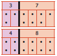
Try these
Question Number (1) Observe and complete:
1 plus 3 equal to dash
5 plus 11 equal to dash
21 plus 47 equal to dash
dash plus dash equal to dash
From this observation, we conclude that “the sum of any two odd numbers is always an dash”
Question Number (2) Observe and complete:
5 into 3 equal to dash
7 into 9 equal to dash
11 into 13 equal to dash
dash into dash equal to dash
From this observation, we conclude that “the product of any two odd numbers is always an dash”
Justify the following statements with appropriate examples:
Question Number (3) The sum of an odd and an even number is always an odd number.
Question Number (4) The product of an odd and an even number is always an even number.
Question Number (5) The product of any three odd numbers is always an odd number.
Note
1 is odd, its successor 2 is even and so its predecessor 0 is also even.
The first natural number 1 is odd and the first whole number 0 is even.
2.Factors
Think about the situation:
The teacher gives Velavan two numbers 8 and 20 and asks him to write them as a product of two numbers. Velavan, with his mental math skills and also using the multiplication tables, quickly finds that 8 equal to 2 into 4; 20 equal to 2 into 10 and 4 into 5. From this, we can say that 2 and 4 are factors of 8 and also 2, 4, 5 and 10 are factors of 20. We can also write 8 as 1 into 8 and hence conclude that 1 and 8 are also factors of 8.
From the above examples, we observe that,
A factor is a number that divides the given number exactly (gives remainder zero).
Every number has two factors that is 1 and the number itself.
Every factor of a given number is less than or equal to that number.
3. Multiples
Look at the multiplication table of (say) 7:
1 into 7 equal to 7
2 into 7 equal to 14
3 into 7 equal to 21
4 into 7 equal to 28
5 into 7 equal to 35
We say that the numbers 7, 14, 21, 28, 35, etcetera are multiples of 7.
From this, we observe that
Every multiple of a given number is greater than or equal to that number.
Multiples of 7 are 7, 14, 21, 28, etcetera . They are greater than or equal to 7.
Multiples of a number are endless.
Multiples of 5 are 5, 10, 15, 20, etcetera. They are endless.
Try these
Question Number (1) Say True or False.
a) The smallest odd natural number is 1.
b) 2 is the smallest even whole number.
c) 12345 plus 5063 is an odd number.
d) Every number is a factor of itself.
e) A number which is a multiple of 6 is also a multiple of 2 and 3.
Question Number (2) Is 7, a factor of 27dash
Question Number (3) Is 12, a factor or a multiple of 12 dash
Question Number (4) Is 30, a factor or a multiple of 10 dash
Question Number (5) Which of the following numbers has 3 as a factor?
a) 8
b) 10
c) 12
d) 14
Question Number (6) The factors of 24 are 1, 2, 3, dash , 6, dash ,12, and 24. Find the missing ones.
Question Number (7) Look at the following numbers carefully and find the missing multiples.
9 |
4 |
Dash |
8 |
27 |
dash |
dash |
16 |
45 |
dash |
dash |
24 |
In the first term, we have learnt about the natural numbers and the whole numbers. Now, we are going to learn about special numbers namely Prime and Composite, the rules for test of divisibility of numbers and also about the HCF and the LCM of numbers.
MATHEMATICS ALIVE – NUMBERS IN REAL LIFE
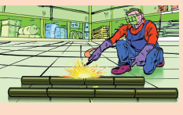
Think about the situation:
The teacher gave 5 buttons to Anbuselvan and 6 buttons to Kayalvizhi and asked them to arrange the buttons in all possible rows in such a way that the number of buttons in each row is equal. They did it, in different ways as shown below:
Anbuselvan’s Ways
By arranging 5 buttons in a row, he gets 1 row
1 into 5 equal to5
By arranging 1 button in each row, he gets 5 rows
5 into 1 equal to 5
He realizes that 5 buttons can be arranged in only 2 rectangular ways. Hence, the only factors of 5 are 1 and 5 (number of rows).
Kayalvizhi’s Ways
By arranging 6 buttons in a row, she gets 1 row
1 into 6 equal to 6
By arranging 3 buttons in each row, she gets 2 rows
2 into 3equal to 6
By arranging 2 buttons in each row, she gets 3 rows
3 into 2 equal to 6
By arranging 1 button in each row, she gets 6 rows
6 into 1 equal to 6
She realises that 6 buttons can be arranged in 4 rectangular ways. Hence, the factors of 6 are 1, 2, 3 and 6 (number of rows).
Make different rectangular arrangements using 1 button, 2 buttons, 3 buttons, 4 buttons, 10 buttons and complete the following table:
Number |
Rectangular arrangements possible |
Factors |
Number of Factors |
Number 1 |
Rectangular arrangements possible. dash |
Factors 1 |
Number of Factors. dash |
Number 2 |
1 into 2; 2 into 1. |
Factors 1,2 |
Number of Factors. 2 |
Number 3 |
Rectangular arrangements possible. dash |
Factors. dash |
Number of Factors. dash |
Number 4 |
Rectangular arrangements possible. dash |
Factors. dash |
Number of Factors. dash |
Number 5 |
Rectangular arrangements possible. dash |
Factors. dash |
Number of Factors. dash |
Number 6 |
Rectangular arrangements possible. dash |
Factors. dash |
Number of Factors. dash |
Number 7 |
Rectangular arrangements possible. dash |
Factors. dash |
Number of Factors. dash |
Number 8 |
Rectangular arrangements possible. dash |
Factors. dash |
Number of Factors. dash |
Number 9 |
Rectangular arrangements possible. dash |
Factors. dash |
Number of Factors. dash |
Number 10 |
1 into 10; 10 into 1; 2 into 5; 5 into 2 |
Factors. dash |
Number of Factors. dash |
Note
The number '1' is neither prime nor composite
From the table, we conclude that
A natural number greater than 1, having only two factors namely 1 and the number itself, is called a prime number. For example, 2 open bracket 1 into 2 close bracket is a prime number as is 13 open bracket 1 into 13 close bracket.
A natural number having more than 2 factors is called a composite number. For example, 15 is a composite number open bracket 15 equal to 1 into 3 into 5 close bracket as is 70 open bracket 70 equal to 1 into 2 into 5 into 7close bracket
DO YOU KNOW
A number is a perfect number if the sum of its factors other than the given number gives the same number. For example, 6 is a perfect number, since adding the factors of 6 (other than 6), namely 1, 2 and 3 gives the given number 6. That is, 1 plus 2 plus 3 equal to 6 is the given number.
Check whether 28, 54 and 496 are perfect numbers or not.
Activity
(1) List out the prime and composite numbers represented by the dates in the month of October.
(2) Generate a few composite numbers by product of two or more natural numbers.
(3) Classify the numbers 34, 57, 71, 93, 101, 111 and 291 as prime or composite.
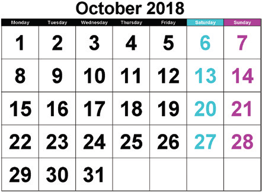
Sieve of Eratosthenes, is a simple method of elimination by which we can easily find the prime numbers up to a given number. This method given by a Greek Mathematician, Eratosthenes of Alexandria, follows some simple steps which are listed below, by which we can find the prime numbers.
Step 1: Create 10 rows and 10 columns and write the numbers from 1 to 10 in the first row, 11 to 20 in the second row and continue the same as 91 to 100 in the tenth row.
Step 2: Leave 1 as it is neither prime nor composite (Why?). Start with the smallest prime 2. Encircle and color 2 and cross out all other multiples of 2 (all even numbers) in the grid.
Step 3: Now, take the next prime 3. Encircle and color 3 and cross out all other multiples of 3 in the grid.
Step 4: As 4 is crossed out already, go for the next prime 5 and cross out multiples of 5, except 5.
Step 5: Keep doing this, for two more primes 7 and 11 and stop. (Think why?)
The above steps are carried out to find prime numbers up to 100 in the following grid.
SIEVE OF ERATOSTHENES
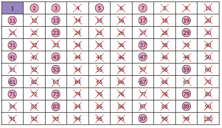
From the Sieve of Eratosthenes, we observe that,
The crossed-out numbers are composite and the coloured numbers (encircled) are primes. The total number of primes up to 100 is 25.
The only prime number that ends with 5 is 5.
Any number greater than 3 can always be expressed as the sum of two or more prime numbers. Let us illustrate this in the following examples.
Example 1: Express 42 and 100 as the sum of two consecutive primes.
Solution: 42 equal to 19 plus 23;
100 equal to 47 plus 53
Example 2: Express 31 and 55 as the sum of any three odd primes.
Solution: 31 equal to 5 plus 7 plus 19 (Another way, 31 equal to 3 plus 11 plus 17 )
55 equal to 3 plus 23 plus 29 (find another way, if possible)
Try these
Question Number (1) Express 68 and 128 as the sum of two consecutive primes.
Question Number (2) Express 79 and 104 as the sum of any three primes.
A pair of prime numbers whose difference is 2, is called twin primes. For example, (5, 7) is a twin prime pair as is (17,19). Try to find a few more twin prime pairs!
DO YOU KNOW
If three successive prime numbers differ by 2, then the prime numbers form a prime triplet. The only prime triplet is (3, 5, 7).
Suppose that, you are asked to simplify a fraction say 126 divided by 216 Since the numbers are relatively bigger, the task is not easy. Observe that, these numbers are not only divisible by 2 and 9 exactly but by other numbers too! How do we know that 2 and 9 are factors of 126 and 216? We are going to see divisibility tests in this section which are rules, that will improve your mental math skills for such determinations.
Divisibility tests, in common, are useful in the prime factorization of a number. Also, it is fun to find whether any large number is exactly divisible by 2, 3, 4, 5, 6, 7, 8, 9, 10 or 11 (and more) by simply observing, examining and performing basic operations with the digits of the given number and not by doing the actual division! Curious to know? Then, remember the following interesting rules and have fun.! As divisibility by 2, 3 and 5 gain importance in the prime factorization of a number, we will define the rules for them first!
Divisibility by 2
A number is divisible by 2, if its ones place is any one of the even numbers 0, 2, 4, 6 or 8.
Examples:
1. four lakh fifty six thousand three hundred and sixty eight is divisible by 2, since its ones place is even (8).
2. Twelve lakh thirty four thousand five hundred and sixty seven is not divisible by 2, since its ones place is not even (7).
Divisibility by 3
Divisibility of a number by 3 is interesting! We can find that 96 is divisible by 3. Here, note that the sum of its digits 9 plus 6 equal to 15 is also divisible by 3. Even 1 plus 5 equal to 6 is also divisible by 3. This is called as iterative or repeated addition. So, A number is divisible by 3 if the sum of its digits is divisible by 3.
Examples:
1. Six lakh fifty four thousand three hundred and twenty one is divisible by 3.
Here 6 plus 5 plus4 plus 3 plus 2 plus 1 equal to 21 and 2 plus 1 equal to 3 is divisible by 3.
Hence, Six lakh fifty four thousand three hundred and twenty one is divisible by 3.
2. The sum of any three consecutive numbers is divisible by 3.
(For example: 33 plus 34 plus 35 equal to 102, is divisible by 3)
3. 107 is not divisible by 3 since 1 plus 0 plus 7 equal to 8, is not divisible by 3.
Divisibility by 5
Observe the multiples of 5. They are 5, 10, 15, 20, 25, 95, 100, 105, and keeps on going. It is clear, that multiples of 5 end either with 0 or 5 and so,
A number is divisible by 5 if its ones place is either 0 or 5.
Examples: 5225 and 280 are divisible by 5
Try these
Question Number (1). Are the leap years divisible by 2?
Question Number (2). Is the first 4 digit number divisible by 3?
Question Number (3). Is your date of birth (Date. Month. Year) divisible by 3?
Question Number (4). Check whether the sum of 5 consecutive numbers is divisible by 5.
Question Number (5). Identify the numbers in the sequence 2000, 2006, 2010, 2015, 2019, 2025 that are divisible by both 2 and 5.
Divisibility by 4
A number is divisible by 4 if the last two digits of the given number is divisible by 4. Note that if the last two digits of a number are zeros, then also it is divisible by 4.
Examples: 71628, 492, 2900 are divisible by 4, because 28 and 92 are divisible by 4 and 2900 is also divisible by 4 as it last 2 digits are zero.
Divisibility by 6
A number is divisible by 6 if it is divisible by both 2 and 3.
Examples: 138, 3246, 6552 and 65784 are divisible by 6.
Note
Though a rule for divisibility of a number by 7 exists, it is a bit tricky and dividing directly by 7 will be easier.
Divisibility by 8
A number is divisible by 8 if the last three digits of the given number is divisible by 8. Note that if the last three digits of a number are zeros, then also it is divisible by 8.
Examples: 2992 is divisible by 8 as 992 is divisible by 8 and 3000 is divisible by 8 as its last three digits are zero.
Divisibility by 9
A number is divisible by 9 if the sum of its digits is divisible by 9. Note that the numbers divisible by 9 are also divisible by 3.
Examples: 9567 is divisible by 9 as 9 plus 5 plus 6 plus 7 equal to 27 is divisible by 9.
Divisibility by 10
A number is divisible by 10 if its one’s place is only zero. Observe that numbers divisible by 10 are also divisible by 5.
Examples:
1. Two thousand twenty is divisible by 10 open bracket Two thousand twenty divided by 10 equal to 202 close bracket whereas two thousand twenty one is not divisible by 10.
2. Two crore sixty lakh eleven thousand nine hundred and fifty is divisible by 10 and hence divisible by 5.
Divisibility by 11
A number is divisible by 11 if the difference between the sum of alternative digits of the number is either 0 or divisible by 11.
Examples: Consider the number two lakhs fifty six thousand seven hundred and ninety five. Here, the difference between the sum of alternative digits equal to open bracket 2 plus 6 plus 9 close bracket minus open bracket 5 plus 7 plus 5 close bracket equal to 17 minus 17 equal to 0.
Hence, two lakhs fifty six thousand seven hundred and ninety five is divisible by 11.
Activity
The teacher may ask all the students to check mentally for divisibility by 2, 3, 4, 5, 6, 8, 9, 10 and 11. If divisible, let them write ‘yes’, otherwise ‘no’(the first one is done for you!).
Number |
divisibility by 2 |
divisibility by 3 |
divisibility by 4 |
divisibility by 5 |
divisibility by 6 |
divisibility by 8 |
divisibility by 9 |
divisibility by 10 |
divisibility by 11 |
Number 68 |
divisibility by 2 Yes |
divisibility by 3 No |
divisibility by 4-Yes |
divisibility by 5 No |
divisibility by 6 No |
divisibility by 8 No |
divisibility by 9 No |
divisibility by 10 No |
divisibility by 11 No |
Number 99 |
divisibility by 2-dash |
divisibility by 3 dash |
divisibility by 4 dash |
divisibility by 5 dash |
divisibility by 6 dash |
divisibility by 8 dash |
divisibility by 9 dash |
divisibility by 10 dash |
divisibility by 11 dash |
Number 300 |
divisibility by 2 dash |
divisibility by 3 dash |
divisibility by 4 dash |
divisibility by 5 dash |
divisibility by 6 dash |
divisibility by 8 dash |
divisibility by 9 dash |
divisibility by 10 dash |
divisibility by 11 dash |
Number 495 |
divisibility by 2 dash |
divisibility by 3 dash |
divisibility by 4 dash |
divisibility by 5 dash |
divisibility by 6 dash |
divisibility by 8 dash |
divisibility by 9 dash |
divisibility by 10 dash |
divisibility by 11 dash |
Number 1260 |
divisibility by 2 dash |
divisibility by 3 dash |
divisibility by 4 dash |
divisibility by 5 dash |
divisibility by 6 dash |
divisibility by 8 dash |
divisibility by 9 dash |
divisibility by 10 dash |
divisibility by 11 dash |
Number 7920 |
divisibility by 2 dash |
divisibility by 3 dash |
divisibility by 4 dash |
divisibility by 5 dash |
divisibility by 6 dash |
divisibility by 8 dash |
divisibility by 9 dash |
divisibility by 10 dash |
divisibility by 11 dash |
Number 11880 |
divisibility by 2 dash |
divisibility by 3 dash |
divisibility by 4 dash |
divisibility by 5 dash |
divisibility by 6 dash |
divisibility by 8 dash |
divisibility by 9 dash |
divisibility by 10 dash |
divisibility by 11 dash |
Number 13650 |
divisibility by 2 dash |
divisibility by 3 dash |
divisibility by 4 dash |
divisibility by 5 dash |
divisibility by 6 dash |
divisibility by 8 dash |
divisibility by 9 dash |
divisibility by 10 dash |
divisibility by 11 dash |
Number 600600 |
divisibility by 2 dash |
divisibility by 3 dash |
divisibility by 4 dash |
divisibility by 5 dash |
divisibility by 6 dash |
divisibility by 8 dash |
divisibility by 9 dash |
divisibility by 10 dash |
divisibility by 11 dash |
Number 15081947 |
divisibility by 2 dash |
divisibility by 3 dash |
divisibility by 4 dash |
divisibility by 5 dash |
divisibility by 6 dash |
divisibility by 8 dash |
divisibility by 9 dash |
divisibility by 10 dash |
divisibility by 11 dash |
Expressing a given number as a product of factors that are all prime numbers is called the prime factorization of a number. For example, 36 can be written as product of factors as 36 equal to1 into 36; 36 equal to 2 into 18; 36 equal to 3 into 12; 36 equal to 4 into 9; 36 equal to 6 into 6
Here, the factors of 36 can be found easily as 1, 2, 3, 4, 6, 9, 12, 18 and 36. Note that not all the factors of 36 are prime numbers. To find the prime factors of 36, we do the prime factorization by the following methods.
1. Division Method 2. Factor Tree Method
1. Division Method:
We can find the prime factorization of 36 as follows:
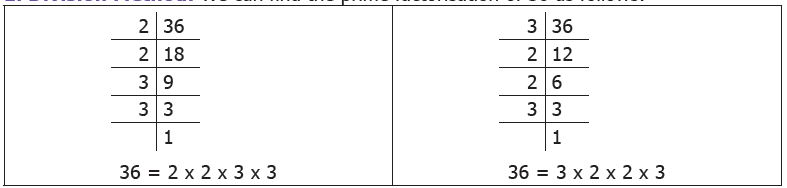
In the above method, why do we start with 2 or 3? why not with 5? Because, we know that 36 is not a multiple of 5 and hence not divisible by 5. So, to find the prime factors of a number, it will be useful to check for divisibility by smaller numbers like 2, 3 and 5 first and not take numbers at random.
2. Factor Tree Method:
Another way to find the prime factorization of a number is to use a visual representation called factor tree. As we add more branches, we will see that this visual representation looks like an upside-down tree. Let us find the prime factorization of 36 as shown below. (Solution for the first one is given for you! Complete the remaining).
![The description for the image starts here. In the first factor tree,36 is divided into two branches as 2 and 18 in the first step. In the second step 18 is divided into two branches as 2 and 9 .In the third step 9 is divided into two branches 3 and 3. In the second factor tree we have to find out missing factors of 36. In the first branch 3 is given and we have to find the missing number .In the second step6 is given. In the third step 2 is given. In the third factor tree for 36 one number is 9 and the other factor missing. In the second step for 9 one number is 3 the other is missing. The missing factors in the third step are 2 and 3. In the fourth factor tree, one factor of 36 is given as 6 in the first step.2 is the factor of 6 in second .3 is given as a factor of missing number in second step .we have the factors of 36. The description for the image ends here.](images/image-15.png)
What we observe from the above is that, the factors of 36 are the same in all the cases, though the order of the factors is different. Usually, the factors are ordered from the least to the greatest as 2 into 2 into 3 into 3.
Note
Since multiplication satisfies commutativity, the order of the factors in the product does not affect the value of the number.
DO YOU KNOW
All the prime numbers, except 2 and 3 can be expressed as 1 more or 1 less to a multiple of 6 (For example, 37 equal to 6 into 6 plus 1). Explore this statement for other primes!
Exercise 1.1
Question Number 1. Fill in the blanks
(1) The number of prime numbers between 11 and 60 is dash.
(2) The numbers 29 and dash are twin primes.
(3) 3753 is divisible by 9 and hence divisible by dash .
(4) The number of distinct prime factors of the smallest 4 digit number is dash
(5) The sum of distinct prime factors of 30 is dash
Question Number 2. Say True or False
(1) The sum of any number of odd numbers is always even.
(2) Every natural number is either prime or composite.
(3) If a number is divisible by 6, then it must be divisible by 3.
(4) 16254 is divisible by each of 2, 3, 6 and 9.
(5) The number of distinct prime factors of 105 is 3.
Question Number 3. Write the smallest and the biggest two-digit prime number.
Question Number 4. Write the smallest and the biggest three-digit composite number.
Question Number 5. The sum of any three odd natural numbers is odd. Justify this statement with an example.
Question Number 6. The digits of the prime number 13 can be reversed to get another prime number 31. Find if any such pairs exist up to 100.
Question Number 7. Your friend says that every odd number is prime. Give an example to prove him or her wrong.
Question Number 8. Each of the composite numbers has at least three factors. Justify this statement with an example.
Question Number 9. Find the dates of any month in a calendar which are divisible by both 2 and 3.
Question Number 10. I am a two-digit prime number and the sum of my digits is 10. I am also one of the factors of 57. Who am I?
Question Number 11. Find the prime factorization of each number by factor tree method and division method.
a) 60
b) 128
c) 144
d) 198
e) 420
f) 999
Question Number 12. If there are 143 math books to be arranged in equal numbers in all the stacks, then find the number of books in each stack and also the number of stacks.
Objective Type Questions
Question Number 13. The difference between two successive odd numbers is
a) 1
b) 2
c) 3
d) 0
Question Number 14. The only even prime number is
a) 4
b) 6
c) 2
d) 0
Question Number 15. Which of the following numbers is not a prime?
a) 53
b) 92
c) 97
d) 71
Question Number 16. The sum of the factors of 27 is
a) 28
b) 37
c) 40
d) 31
Question Number 17. The factors of a number are 1, 2, 4, 5, 8, 10, 16, 20, 40 and 80 What is the number?
a) 80
b) 100
c) 128
d) 160
Question Number 18. The prime factorization of 60 is 2 into2 into 3 into 5. Any other number which has the same
prime factorization as 60 is
a) 30
b) 120
c) 90
d) impossible
Question Number 19. If the number 6354 dash 97 is divisible by 9, then the value of dash is
a) 2
b) 4
c) 6
d) 7
Question Number 20. The number 87846 is divisible by
a) 2 only
b) 3 only
c) 11 only
d) all of these
Consider the numbers 45 and 60. Use of divisibility tests will also help us to find the factors of 45 and 60. The factors of 45 are 1, 3, 5, 9, 15 and 45 and the factors of 60 are 1, 2, 3, 4, 5, 6, 10, 12, 15, 20, 30 and 60. Here, the common factors of 45 and 60 are 1, 3, 5 and 15.
As factors of a number are finite, we can think of the Highest Common Factor of numbers, shortly denoted as HCF.
Think about the situation:
Situation 1:
Pavithra plans to celebrate Deepavali at her home by distributing sweets and savories to the families which cannot afford to buy them. Pavithra's mother gives her 63 athirasams and 42 murukkus. Each family should be given the same number of athirasams and the same number of murukkus. What is the greatest number of families that she can distribute?
Now, Pavithra can tackle this situation by using HCF as given in the following illustration.
Illustration: Find the HCF of 63 and 42.
Solution: The prime factorisation of 63 is 3 into 3 into 7 and the prime factorisation of 42 is 2 into 3 into 7. We find that the common prime factors of 63 and 42 are 3 and 7 (see the diagram) and so the highest common factor is 3 into 7 equal to21. So, Pavithra can distribute equal number of athirasams (3 per family) and murukkus (2 per family) for a maximum of 21 families.
Situation 2:
Consider the rods of length 8 feet and 12 feet. We have to cut these rods into pieces of equal length. How many pieces can we get? What will be the length of the longest piece that is common for both the rods?
The rod of 8 feet can be divided into small rods of length 1 foot or 2 feet or 4 feet (These are factors of 8). The rod of 12 feet can be divided into small rods of length 1 foot or 2 feet or 3 feet or 4 feet or 6 feet (These are factors of 12). This is represented as follows:
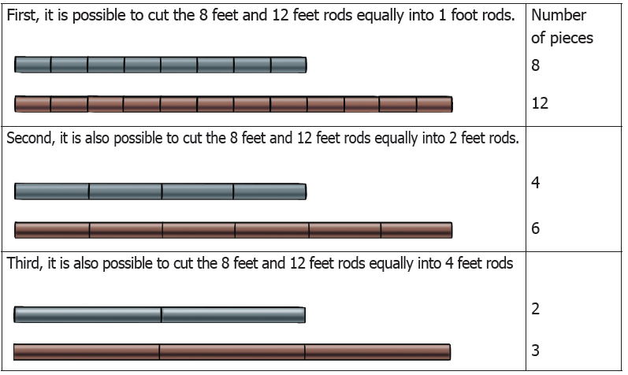
The length of the pieces that are common to both the rods (as given above) are of length 1 foot, 2 feet and 4 feet (that is common factors of 8 and 12). Hence, the HCF of 8 and 12 is the length of the longest rod that is 4 feet that can be cut equally from the rods of length 8 feet and 12 feet. So, the Highest Common Factor (HCF) of two numbers is the largest factor that is common to both of them. The Highest Common Factor of the numbers x and y can be written as HCF (x, y).
Note
The Highest Common Factor (HCF) is also called as the Greatest Common Divisor (GCD) or the Greatest Common Factor (GCF).
● HCF (1, x) equal to1
● HCF (x, y) equal to x, if y is a multiple of x. For example, HCF (3, 6) equal to 3.
● If the HCF of two numbers is 1, then the numbers are said to be co-primes or
relatively prime. Here, the two numbers can both be primes as (5, 7) or both can be composites as (14, 27) or one can be a prime and other a composite as (11, 12).
Example 3: Find the HCF of the numbers 40 and 56 by division method.
Solution:
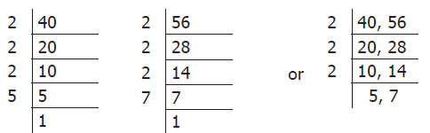
Prime factorization of 40 equal to 2 into 2 into 2 into 5
Prime factorization of 56 equal to 2 into 2 into 2 into 7
The product of common factors of 40 and 56 equal to 2 into 2 into 2 equal to 8 and so, HCF (40, 56) equal to 8
Dividing by the common factor 2, (in 3 steps)
HCF equal to Product of common factors equal to 2 into 2 into 2 equal to 8
Example 4: Find the HCF of the numbers 18, 24 and 30 by factor tree method.
Solution:
Let us find the factors of 18, 24 and 30 (use of The factors of 18 are 1, 2, 3, 6, 9 and 18. The factors of 24 are 1, 2, 3, 4, 6, 8, 12 and 24. The factors of 30 are 1, 2, 3, 5, 6, 10, 15 and 30. The factors that are common to all the three given numbers are 1, 2, 3 and 6 of which 6 is the highest. Hence, HCF (18, 24, 30) equal to 6. Note that 1 is a trivial factor of all numbers. |
Let us find the factors of 24 by tree method. 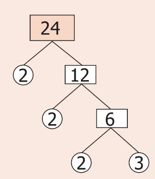 Here, 24 equal to 2 into 2 into 2 into 3 |
Let us now write the multiples of 5 and 7
Multiples of 5 are 5, 10, 15, 20, 25, 30, 35, 40, 45, 50, 55, 60, 65, 70 etcetera
Multiples of 7 are 7, 14, 21, 28, 35, 42, 49, 56, 63, 70 etcetera
Here, the common multiples of 5 and 7 are 35 and 70 and will go on without ending.
As multiples of a number are infinite, we can think of the Least Common Multiple of numbers, shortly denoted as LCM.
Think about the situation:
Situation 1: Write the multiplication table of 4 and 5 (up to 10).
![The description for the image starts here. This image is a 4th and 5th Table. Under fourth table it is given as 1 into 4 equal to 4, 2 into 4 equal to 8, 3 into 4 equal to 12, 4 into 4 equal to 16, 5 into 4 equal to 20, 6 into 4 equal to 24, 7 into 4 equal to 28, 8 into 4 equal to 32, 9 into 4 equal to 36, 10 into 4 equal to 40. Under fifth table it is given as 1 into 5 equal to 5, 2 into 5 equal to 10, 3 into 5 equal to 15, 4 into 5 equal to 20, 5 into 5 equal to 25, 6 into 5 equal to 30, 7 into 5 equal to 35, 8 into 5 equal to 40, 9 into 5 equal to 45, 10 into 5 equal to 50. The description for the image ends here.](images/image-19.png)
Observing the multiplication tables, can you find the multiples (product of numbers) that are the same in the 4th table and 5th table? If yes, what are they? Yes, they are 20, 40, etcetera. From the multiples of 4 and 5, we can easily find that 20 is the least common multiple of 4 and 5.
Situation 2:
Anu wants to buy Ragi Laddus and Thattais to serve at her sister's birthday party. Ragi Laddus come in packets of 4 and Thattais come in packets of 6. Anu has to buy these packets so that there are the same number of Ragi Laddus and Thattais to serve at the party. How will Anu tackle this situation?
This situation can be tackled by Anu using the concept of LCM. Here, multiples of 4 are 4, 8, 12, 16, 20, 24, etcetera and multiples of 6 are 6, 12, 18, 24, 30, 36, etcetera. We find that the common multiples are 12, 24, etcetera of which 12 is the least common multiple. Hence, Anu should buy a minimum of 3 packets of Ragi Laddus and 2 packets of Thattais so that there are the same number of Ragi Laddus (12) and Thattais (12) to serve at the party.
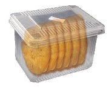
Situation 3:
Consider the red and the blue colored floor mats of length 4 units and 5 units as follows.
Five red colored floor mats of 4 units each can be arranged as follows. Its total length is 5 multiple 4 equal to 20 units.
Four blue coloured floor mats of 5 units each can be arranged as follows. Its total length is also the same 4 multiple 5 equal to 20 units.
Note that the 5 floor mats each of length 4 units are required to equal 4 floor mats each of length 5 units and that is, the length 20 units is the smallest common length that can be matched by both sizes. From the above, it shows that the least common multiple of 4 and 5 is 4 multiple 5 equal to 20.
The Least Common Multiple of any two non-zero whole numbers is the smallest or the lowest common multiple of both the numbers. The Least Common Multiple of the numbers x and y can be written as LCM (x, y).
We can find the least common multiple of two or more numbers by the following methods.
1. Division Method
2. Prime Factorization Method
Example 5: Find the LCM of 156 and 124.
Solution: By Division method
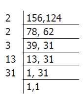
Step 1: Start with the smallest prime factor and go on dividing till all the numbers are divided as given below.
Step 2: LCM equal to product of all prime factors
equal to 2 into 2 into 3 into 13 into 31 equal to 4836
Thus, the LCM of 156 and 124 is 4836.
By Prime Factorisation method
Step 1: We write the prime factors of 156 and 124 as given below (use of divisibility test
rules will also help).
156 equal to 2 into 78 equal to 2 into 2 into 39 equal to 2 into 2 into 3 into 13
124 equal to 2 into 62 equal to 2 into 2 into 31
Step 2: The product of common factors is 2 into 2 and also the product of the factors that are not common is 3 into 13 into 31.
Step 3: Now, LCM equal to product of common factors into product of factors that are not common
equal to (2 into 2) into (3 into 13 into 31) equal to 4 into 1209 equal to 4836
Thus, LCM of 156 and 124 is 4836.
(or)
156 equal to 2 into 78 equal to 2 into 2 into 39 equal to 2 into 2 into 3 into 13;
124 equal to 2 into 62 equal to 2 into 2 into 31
The prime factor 2 appears a maximum of 2 times in the prime factorization of 156 and 124, the prime factor 3 appears only 1 time in the prime factorization of 156, the prime factor 13 appears only 1 time in the prime factorization of 156 and the prime factor.
31 appears only 1 time in the prime factorization of 124.
Hence, the required LCM equal to (2 into 2) into 3 into 13 into 31 equal to 4836.
Let us see the word problems that involve the HCF and the LCM concepts in daily life situations.
Example 6: What is the greatest number that will divide 62, 78 and 109 leaving remainders 2, 3 and 4 respectively?
Solution: Get all the common factors of 62 minus 2, 78 minus 3 and 109 minus 4, that is ., 60, 75 and 105 and
see that the common factors will divide them all. The greatest number is the H.C.F of 60, 75 and 105.
60 equal to2 into 2 into 3 into 5 75 equal to3 into 5 into 5 105 equal to3 into 5 into 7
Hence, the HCF is 3 into 5 equal to15, which is the greatest number that will divide 62, 78, 109 leaving
remainders 2, 3 and 4 respectively.
Example 7: A book seller has 175 English books, 245 Science books and 385 Mathematics books. He wants to sell the books in a box, subject-wise in equal numbers. What will be the greatest number of the boxes required? Also find the number of books for each subject in a box.
Solution: This is a HCF related problem. So, we need to find the HCF of 175, 245 and 385.
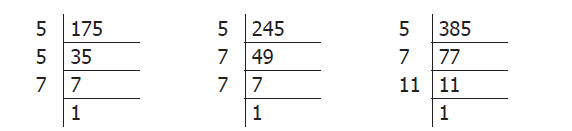
175 equal to 5 into 5 into 7; 245 equal to 5 into 7 into 7; 385 equal to 5 into 7 into 11
The HCF of 175, 245 and 385 is the product of the common factors 5 and 7 that is, 5 into 7 equal to 35
Since each box contains equal number of books, the greatest possible number of boxes equal to 35
The number of English books in each box equal to 175 divided by 35 equal to 5
The number of Science books in each box equal to 245 divided by 35 equal to 7
The number of Maths books in each box equal to 385 divided by 35 equal to 11
Hence, the total number of books in each box is 5 plus7 plus 11 equal to 23.
Note
LCM is always greater than or equal to the largest of the given numbers.
LCM will always be a multiple of HCF. Further LCM is greater than HCF
LCM (x, y) equal to y, if y is a multiple of x. For example, LCM (3,6) equal to 6.
Example 8: Find the ratio of the HCF and the LCM of the numbers 18 and 30.
Solution: Now, 18 equal to 2 into 3 into 3 and 30 equal to 2 into 3 into 5 and their HCF is 2 into 3 equal to 6 and LCM is 2 into 3 into 3 into 5 equal to 90
Hence, HCF is to LCM equal to 6 is to 90 equal to 1 is to 15
Example 9: Find the smallest number that can be divided by 254 and 508 which leaves the remainder 4.
Solution: All common multiples of 254 and 508 will be divisible by both the numbers. Let us find the LCM of 254 and 508 (by division method).
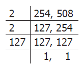
LCM of 254, five hundred and eight equal to 2 into 2 into 127 equal to five hundred and eight
Thus, five hundred and eight is the smallest common number that is divisible by 254 and five hundred and eight. Now, as we need remainder 4 while dividing, the required number is 4 more than the LCM and so, the required number is five hundred and eight plus 4 equal to 512.
Example 10: What is the smallest 5 digit number that is exactly divisible by 72 and 108?
Solution: First let us find the LCM of 72 and 108 (by division method).
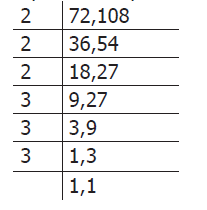
LCM of 72 and 108 equal to 2 into 2 into 2 into 3 into 3 into 3 equal to 216
Now, all multiples of 216 will also be common multiples of 72 and 108.
The smallest 5 digit number is equal to 10,000.
Now, 10,000 divided by 216 gives quotient as 46 and remainder as 164.
Hence the next multiple of 216 that is., 216 into 47 equal to 10,152 is the required smallest 5 digit number that is exactly divisible by 72 and 108.
Example 11: There are four Mobile Phones in a house. At 5 a.m, all the four Mobile Phones will ring together. Thereafter, the first one rings every 15 minutes, the second one rings every 20 minutes, the third one rings every 25 minutes and the fourth one rings every 30 minutes. At what time, will the four Mobile Phones ring together again?
Solution: This is a LCM related sum. So, we need to find the LCM of 15, 20, 25 and 30.
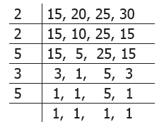
The LCM of 15, 20, 25 and 30 is 2 into 2 into 3 into 5 into 5 equal to 300 minutes equal to 5 into 60 minutes equal to 5 into 1 hour equal to 5 hours
Thus, the four Mobile Phones will ring together again at 10 a.m.
Try this
A small boy went to a town to sell a basket of wood apples. On the way, some robbers grabbed the fruits from him and ate them. The small boy went to the King and complained. The King asked him, “How many wood apples did you bring?”. The boy replied, “Your Majesty! I didn’t know, but I knew that if you divided my fruits into groups of 2, one fruit would be left in the basket”. He continued saying that if the fruits were divided into groups of 3, 4, 5 and 6, the fruits left in the basket would be 2, 3, 4 and 5 respectively. Also, if the fruits were divided into groups of 7, no fruit would be there in the basket. Can you find the number of fruits, the small boy had initially? (This problem is taken from the famous Mathematics problems collection book in Tamil called “Kanakkathikaram” under the heading of “Wood Apple Problem”)
Let us find the HCF and the LCM of 36 and 48. First, find the factors of 36 and 48 using division method.
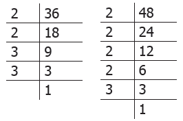
36 equal to 2 into 2 into 3 into 3; 48 equal to 2 into 2 into 2 into 2 into 3
HCF equal to 2 into 2 into 3 equal to 12
LCM equal to 2 into 2 into 3 into 2 into 2 into 3 equal to 144
Observe that, 36 into 48 equal to 144 into 12 equal to 1728
We find that, product of two given numbers equals their HCF into LCM
In general, for any 2 numbers x and y,
X into y equals HCF (x, y) into LCM (x, y)
Example 12: The LCM of two numbers is 432 and their HCF is 36. If one of the numbers is 108, then find the other number.
Solution: We know that, the product of the two numbers equal toLCM into HCF
108 into (the other number) equal to 432 into 36
The other number equal to (432 into 36) divided by 108 equal to 144
Example 13: The LCM of two co-prime numbers is 5005. If one of the numbers is 65, then find the other number.
Solution: We know that, the product of the two numbers equal to LCM into HCF
As the HCF of co-primes is 1,
65 into (the other number) equal to 5005 into 1
The other number equal to 5005 divided by 65 equal to 77
ICT Corner
Numbers
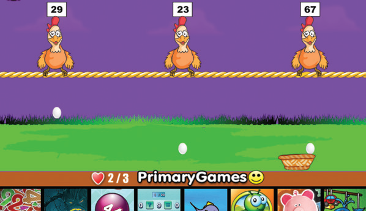
Step 1
Open the Browser and type the URL Link given below (or) Scan the QR Code. GeoGebra work sheet named “Numbers” will open. The work sheet contains two activities. 1. LCM and HCF and 2. Prime number game.
In the first activity Click on New Problem and solve the problem, then check your answer.
Step 2
In the second activity catch the egg which shows prime number as quick as possible. You can select the level of speed in the beginning.
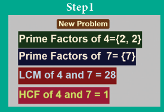
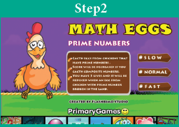
Browse in the below link for the given activities:
Numbers: https://ggbm.at/Exu3mtz5 or Scan the QR Code.
Exercise 1.2
Question Number 1. Fill in the blanks
(1) The HCF of 45 and 75 is dash
(2) The HCF of two successive even numbers is dash
(3) If the LCM of 3 and 9 is 9, then their HCF is dash
(4) The LCM of 26, 39 and 52 is dash
(5) The least number that should be added to 57 so that the sum is exactly divisible by 2,3, 4 and 5 is dash
Question Number 2. Say True or False
(1) The numbers 57 and 69 are co-primes.
(2) The HCF of 17 and 18 is 1.
(3) The LCM of two successive numbers is the product of the numbers.
(4) The LCM of two co-primes is the sum of the numbers.
(5) The HCF of two numbers is always a factor of their LCM .
Question Number 3. Find the HCF of each set of numbers using prime factorization method.
(1) Eighteen comma 24
(2) 51 comma 85
(3) 61 comma 76
(4) 84 comma 120
(5) 27 comma 45 comma 81
(6) 45 comma 55 comma 95
Question Number 4. Find the LCM of each set of numbers using prime factorization method.
(1) 6 comma 9
(2) 8 comma 12
(3) 10 comma 15
(4) 14 comma 42
(5) 30 comma 40 comma 60
(6) 15 comma 25 comma 75
Question Number 5. Find the HCF and the LCM of the numbers 154, 198 and 286.
Question Number 6. What is the greatest possible volume of a vessel that can be used to measure exactly the volume of milk in cans (in full capacity) of 80 liters, 100 liters and 120 liters?
Question Number 7. The traffic lights at three different road junctions change after every 40 seconds, 60 seconds and 72 seconds respectively. If they changed simultaneously together at 8 a.m at the junctions, at what time will they simultaneously change together again?
Question Number 8. The LCM of two numbers is 210 and their HCF is 14. How many such pairs are possible?
Question Number 9. The LCM of two numbers is 6 times their HCF. If the HCF is 12 and one of the numbers is 36, then find the other number.
Objective Type Questions
Question Number 10. Which of the following pairs is co-prime?
a) 51 comma 63
b) 52 comma 91
c) 71 comma 81
d) 81 comma 99
Question Number 11. The greatest 4-digit number which is exactly divisible by 8 comma 9 and 12 is
a) 9999
b) 9996
c) 9696
d) 9936
Question Number 12. The HCF of two numbers is 2 and their LCM is 154. If the difference between the numbers is 8, then the sum is
a) 26
b) 36
c) 46
d) 56
Question Number 13. Which of the following cannot be the HCF of two numbers whose LCM is 120?
a) 60
b) 40
c) 80
d) 30
Exercise 1.3
Miscellaneous Practice Problems
Question Number 1. Every even number greater than 2 can be expressed as the sum of two prime numbers. Verify this statement for every even number up to 16.
Question Number 2. Is 173 a prime? Why?
Question Number 3. For which of the numbers, from n equal to 2 to 8, is 2 n minus 1 a prime?
Question Number 4. State true or false and explain your answer with reason for the following statements.
a) A number is divisible by 9, if it is divisible by 3.
b) A number is divisible by 6, if it is divisible by 12.
Question Number 5. Find A as required:
(1) The greatest 2 digit number 9 A is divisible by 2.
(2) The least number 567 A is divisible by 3.
(3) The greatest 3 digit number 9 A 6 is divisible by 6.
(4) The number A 08 is divisible by 4 and 9.
(5) The number 225 A 85 is divisible by 11.
Question Number 6. Numbers divisible by 4 and 6 are divisible by 24. Verify this statement and support your answer with an example.
Question Number 7. The sum of any two successive odd numbers is always divisible by 4. Justify this statement with an example.
Question Number 8. Find the length of the longest rope that can be used to measure exactly the ropes of length 1 meter 20 centimeter , 3 meter 60 centimeter and 4 meter.
Challenge Problems
Question Number 9. The sum of three prime numbers is 80. The difference of two of them is 4. Find the numbers.
Question Number 10. Find the sum of all the prime numbers between 10 and 20 and check whether that sum is divisible by all the single digit numbers.
Question Number 11. Find the smallest number which is exactly divisible by all the numbers from 1 to 9.
Question Number 12. The product of any three consecutive numbers is always divisible by 6. Justify this statement with an example.
Question Number 13. Malarvizhi, Karthiga and Anjali are friends and natives of the same village. They work at different places. Malarvizhi comes to her home once in 5 days. Similarly, Karthiga and Anjali come to their homes once in 6 days and 10 days respectively. Assuming that they met each other on the 1st of October, when will all the three meet again?
Question Number 14. In an apartment consisting of 108 floors, two lifts A & B starting from the ground floor, stop at every 3rd and 5th floors respectively. On which floors, will both of them stop together?
Question Number 15. The product of 2 two-digit numbers is 300 and their HCF is 5. What are the numbers?
Question Number 16. Find whether the number five lakh sixty four thousand eight hundred and seventy two is divisible by 88. (use of the test of divisibility rule for 8 and 11 will help!)
Question Number 17. Wilson, Mathan and Guna can complete one round of a circular track in 10, 15 and 20 minutes respectively. If they start together at 7 a.m from the starting point, at what time will they meet together again at the starting point?
DO YOU KNOW
Two numbers are said to be amicable numbers if the sum of the factors of one number (except the number itself) gives the other number.
The numbers 220 and 284 are amicable, since the sum of the factors of 220 (except 220) that is., 1 plus 2 plus 4 plus 5 plus 10 plus 11 plus 20 plus 22 plus 44 plus 55 plus 110 equals to 284 and the sum of the factors of 284 (except 284) that is., 1 plus 2 plus 4 plus 71 plus 142 equals to two hundred and twenty.
Check whether thousand hundred and eighty four and thousand two hundred and ten are amicable numbers.
Summary
A natural number greater than 1, having only two factors namely 1 and the number itself, is called a prime number.
A natural number having more than two factors is called a composite number.
A pair of prime numbers whose difference is 2 is called as twin primes.
Every composite number can be expressed as a product of prime numbers in a unique way.
The Highest Common Factor of any two non-zero whole numbers is the largest common factor of both the numbers.
The Least Common Multiple of any two non-zero whole numbers is the smallest common multiple of both the numbers.
Two numbers having 1 as their only common factor are said to be co-primes or relatively prime.
The product of two given numbers is equal to the product of their HCF and LCM.
Learning Objectives:
To understand the position of decimal point in the conversion of smaller unit to larger unit and vice versa.
To do the four fundamental operations on quantities of different units.
To read time in a clock and convert the 12 hour format to the 24 hour format and vice versa.
To find duration between 2 given time instances.
To do conversion of units of time.
Let us listen to the following conversation between a teacher and a student:
Teacher: Have you ever noticed your mother buying knotted flowers? How is it measured?
Student: Yes teacher. The flower seller measures the string of flowers using her or his hand. She or He measures in cubit ( mulam in Tamil).
Teacher: If you measure the same using your hand, what would you observe?
Student: It would measure more than one cubit, because my hand is shorter.
Teacher: Yes, how far is your house from the school?
Student: Just 100 feet, teacher.
Teacher: How do you buy rice, milk, cloth from the shop?
Student: We buy the rice in kilogram, milk in litre , cloth in meter.
Teacher: How much time do you spend on your homework?
Student: I usually spend an hour to do my homework.
Teacher: How do you measure height and weight?
Student: Height in centimetre, Weight in kilogram.
Teacher: Have you heard about any other measures used in earlier days?
Student: My grandparents talk of measures used in their days such as Padi (படி), Ulakku (உழக்கு), Aalaakku (ஆழாக்கு), Marakkaal (மரக்கால்), Feet (adi), Span (saan), Cubit (mulam).
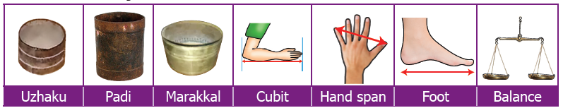
Teacher: Then why do we use kilogram, meter, liter instead of those units?
Student: I don’t know teacher, please tell us why?
Teacher: As we started trading worldwide ,we found people in various places using different measures. The 'kings’ foot’, the ‘kings arm’ and the 'yard' (the distance between the tip of his nose to the tip of the thumb) were used as units to measure small length in various places. As these lengths differed from person to person and place to place, it was necessary to standardize measurements throughout the world. The metric measures were defined in 1971 by the General Conference of Weights and Measures.
The basic metric units are Meter, Litre, Gram, Seconds and so on. It is based on the decimal system (10), which is easier to convert from one unit to another. We use kilometer, meter, centimeter, millimeter to measure length; kilogram, gram, milligram for weight and kilolitre, litre, millilitre for volume in shops, schools, office, railways and many other places.
An eye blink represents a second; heart beats are counted per minute; working time of an employee is calculated in hours.
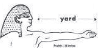
MATHEMATICS ALIVE – MEASUREMENTS IN REAL LIFE
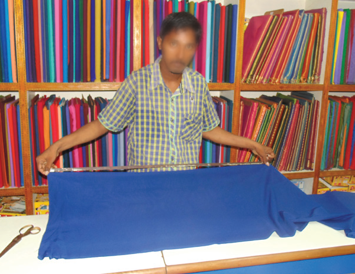
Universally accepted basic metric units are
Length in meter.
Weight in gram.
Capacity (volume) in litre.
We use different metric units for different sizes in various situations
Size |
Metric Units |
Size Large ones |
Metric Units Kilometer, kilolitre, kilogram |
Size Medium ones |
Metric Units Metre, Litre, Gram |
Size Small ones |
Metric Units Centimetre, Centilitre, Centigram |
Size Very small ones |
Metric Units Millimeter, Millilitre, Milligram |
Try this
Question Number 1. Complete the following table:
Metric Unit Table (Hierarchy of Units)
For Length
Kilometer |
Hectometer |
Decameter |
Metre |
Decimeter |
Centimetre |
Millimeter |
For Weight
Dash |
Dash |
Dash |
Gram |
dash |
dash |
Dash |
For Volume
Dash |
Dash |
Dash |
Litre |
dash |
dash |
Dash |
Question Number 2. Determine which metric unit you would use to express the following:
1. The length of your middle finger.
2. The weight of an elephant.
3. The weight of the ring.
4. The weight of the tablet.
5. The length of the safety pin.
6. The height of the building.
7. The length of the sea shore in tamilnadu.
8. The volume of cup of coffee.
9. The capacity of water in the tank.
All units of length in the metric system are defined in terms of the metre. A prefix is added to indicate the decimal place value position of the measurements. Similarly, the units of weight and volume are defined in terms of gram and litter respectively. Let us observe the conversion chart.
• When we move from higher unit to lower unit, multiply the given measure by the powers of 10’s.
• When we move from lower unit to higher unit, divide the given measure by the powers of 10’s.
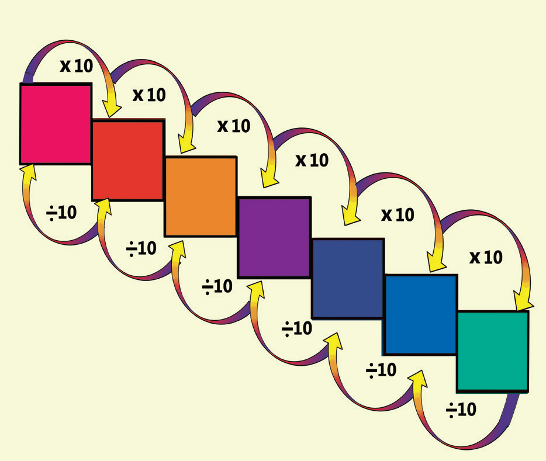
Remember the following Conversion table:
Length |
Weight |
Volume (Capacity) |
|
|
|
Before we study Conversion of metric units, we should learn about decimal point position when multiplying or dividing of a decimal number by the powers of ten.
When a decimal number is multiplied by 10, 100, 1000, 10000, we move the decimal point by 1, 2 ,3 ,4 places to the right respectively. |
When a decimal number is divided by 10, 100, 1000, or 10000, we move the decimal point 1, 2, 3, 4 places to the left respectively. |
Example: Multiply 345.972 by 10,100,1000 and 10000 345.972 into 10 equals to 3459.72 (move the decimal point by one place to the right) 345.972 into 100 equals to 34597.2 (move the decimal point by two places to the right) 345.972 into 1000 equal to 345972 (move the decimal point by three places to the right) 345.9720 into 10000 equal to 3459720 (move the decimal point by four places to the right) Since, there are only 3 digits in the decimal part, add a zero to the right and then place the decimal point. |
Example: Divide 647.39 by 10,100 and 1000 and 10000 647.39 by 10 equal to 64.739 (move the decimal point one place towards its left) 647.39 by 100 equal to 6.4739 (move the decimal point two places towards its left) 647.39 by 1000 equal to 0.64739 (move the decimal point three places towards its left) 0647.39 by 10000 equal to 0.064739 (move the decimal point four places towards its left) Since there are only 3 digits in the integral part, add one zero and place the point before it. |
Example 1: The official distance of Marathon race is 42.195 kilometer. Express this distance in meter.
Solution: The official distance of Marathon race is 42.195 kilometer. 1 kilometer equal to 1000 meter
equal to 42.195 into 1000 meter
equal to 42195 meter
Example 2: The average rainfall of Tamilnadu is 998 millimetre. convert it into centimetre.
Solution: The average rainfall equal to 998 milli metre equal to 998.0 into (one by 10) centimeter
1 centimeter equal to 10 milli metre
(one by 10) centimeter equal to 1millimetre
equal to 998 by 10 centimeter
equal to 99.8 centimetre
Example 3: A flag pole is 5-meter 35 centimeter long. What is the length of the flag pole in centimeter?
Solution: 1 meter equal to 100 centimeters
The length of a flag pole equal to 5 meter 35-centimeter long
equal to (5 into 100) centimeter plus 35 centimeter
equal to 500 centimeter plus 35 centimeter
equal to 535 centimeter
The flag pole is 535 centimeter long.
Example 4: Janaki bought 650 milli gram of a tablet. What is its weight in gram?
Solution: 1 gram equals to 1000 milligram
1 by 1000 gram equal to 1 milli gram
weight of a tablet equal to 650 milligram.
equal to 650.0 into 1 by 1000 gram
equal to 650 by 1000 gram equal to 0.65 gram
Example 5: Murali has a bag that weighs 3 kilo gram and 450 grams. What is its weight in gram?
Solution: 1 kilogram equal to thousand gram
weight of Murali’s bag equal to 3 kilogram and 450 grams,
equal to (3 into1000 grams) plus 450 grams
equal to 3000 grams plus 450 grams
equal to 3450 grams
Example 6: A calf drinks 5.750 litre of water, convert into millilitre
Solution: 1 litre equal to 1000 millilitre
Quantity of water drunk by the calf equal to 5.750 litre
equal to 5.750 into 1000 millilitres
equal to 5750 millilitre
Example 7: Convert 526 milliliter into litre
1 litre equal to 1000 millilitre
Solution:
1 by 1000 litre equal to1 millilitre
526 milliliter equal to 526 point zero into one by 1000 litre
526 by 1000 litres equal to 0.526 litres
Try these:
Convert the following
Question Number 1) 23 kilometers into meter
Question Number 2) 1.78 meter into centimeter
Question Number 3) 7814 meters into kilometer
Question Number 4) 8.67 millimeter into centimeter
Question Number 5) 16 litre into millimeter
Question Number 6) 1500 millilitre into litre
Question Number 7) 2360 litre into kilolitre
Question Number 8) 873 litre into millilitre
Question Number 9) 40 milligram into gram
Question Number 10) Thousand five fifty gram into kilogram
Question Number 11) 6.5 kilogram into gram
Question Number 12) 723 gram into milligram
Think
Which of these is heavier in weight? 5 kilograms of cotton; 5000 grams of Iron
Some measures that are not part of metric system.
1 inch equal to 2.54 centimeter
1 meter equal to 3.281 feet
1 meter equal to 39.37 inches
1 feet equal to 0.305 meter equal to 30.48 centimeter
1 mile equal to 1.609 kilometer
1 tonne equal to 1000 kilogram
1 quintalequal to100 kilogram
1 tonne equal to 10 quintals
1 sovereign equal to 8 gram
TMC: (Thousand Million Cubic feet),
1 TMC equal to twenty eight billion three hundred sixteen million eight hundred forty six thousand five hundred and ninety two litres
DO YOU KNOW
1 kilogram equal to 1000 grams
1 by 4 kilogram equal to 250 grams
1 by 2 kilograms equal to 500 grams
3 by 4 kilograms equal to 750 grams
The following Tamil puzzle is taken from the famous Mathematics problems collection book in Tamil called “Kanak kathi karam” in which is a good example of conversion of units of distance:
Muppathi rendu mulam ula mut panai yai
Thap paamal ondhi thavalntheri cheppa mudach
Saaneri naanku virar kiliyum enbare
Naanaa thoru naal nakarnthu
Meaning of this puzzle:
On a palm tree of height 32 cubit, a chameleon tried to reach the top of the tree. If it climbed one hand span on it but slipped four fingers on one day, in how many days will it reach the top of the tree?
Solution:
1 hand span equal to 12 fingers
1 cubit equal to 2 hand spans equal to 24 fingers.
Height of the palm tree equal to 32 cubits equal to 32 into 24 fingers equal to 768 fingers.
Distance climbed in 1 day equal to 1 hand span equal to 12 fingers.
Distance slipped in 1 day equal to 4 fingers.
Actual distance climbed in 1 day equal to 12 minus 4 equals to 8 fingers.
Number of days required to climb the top of the tree equal to 768 by 8 equal to 96 days
We can do the basic operations on the metric units as we do the decimal operations. Note that, measurements with the same unit can be added or subtracted, but unlike units of measurements should be converted into like units and then they can be added or subtracted.
Example 8: Saritha bought 6 meter and 40 centimeters of cloth for herself and 3 metre and 80 centimeters of cloth for her sister. What was the total length of the cloth bought by her?
Solution is given in the following table.
|
meter |
centimetre |
|
1 meter |
|
Length of cloth bought for Saritha |
6 meter |
40 centimetre |
Length of cloth bought for Saritha’s sister |
3 meter |
80 centimetre |
Total length of the cloth |
10meter |
20 centimeters |
Example 9: Pradeep travels 4 kilometer and 350 meter to reach to the market, while Kandan travels 6 kilometer and 200 meter to reach to the same market from their houses. How much distance does Kandan travel more than Pradeep?
Solution is given in the following table.
|
kilo meter |
Meter |
Distance travelled by Kandan |
5 kilo meter |
1200 Meter |
Distance travelled by Pradeep |
4 kilo meter |
350 Meter |
Difference in distance of their travel |
1 kilometer |
850 Meter |
Kandan travelled 1 kilometer and 850 meter more than Pradeep.
Example 10: A child needs 100 grams of vegetables per day. How many kilograms of vegetables will be needed for a school of strength 90.
Solution :
Total strength of the school equal to 90
Weight of vegetables for each child per day equal to 100 grams
Total weight of vegetables for 90 children per day equal to 90 into 100 grams
equal to 9000 grams
equal to 9 kilograms
Example 11: A bag contains 81 kilogram of sugar. If the shopkeeper fills up these into small packets of 750 gram. each, then how many packets can be made from 81 kilogram of sugar?
Solution :
Quantity of sugar in the bag equal to 81 kilogram
Quantity of sugar filled in each packet equal to750 grams
Number of packets required equal to 81-kilogram divided by 750 gram
equal to 81 into 1000 grams divided by750 grams
equal to 81000 grams divided by 750 grams equal to 108
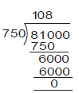
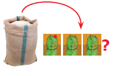
Think
Question Number 1. Five kilograms of compost is needed for a coconut tree for every six months. How many kilograms of compost is needed for 50 such coconut trees for one and half years.?
Question Number 2. Is this correct: 4 meter plus 3 centimeter equal to 7 meters
Question Number 3. Can we add the following?
1. 6 litre plus 7 kilograms,
2. 3 meter plus 5 litre
3. 400 millilitre plus 300 grams
Exercise 2.1
Question Number 1. Fill in the blanks
(1) 250 milliliter plus one by two litre equal to dash litre
(2) 150 kilogram 200 grams plus 55 kilogram 750 gram equal to dash kilogram dash gram
(3) 20 litre minus 1 litre 500 milliliter equal to dash litre dash millilitre
(4) 450 millilitre into 5 equal to dash litre dash millilitre
(5) 50 kilogram divided by 100 gram equal to dash
Question Number 2. True or False
(1) Pugazhenthi ate 100 grams of nuts which is equal to 0.1 kilogram.
(2) Meena bought 250 millilitre of buttermilk which is equal to 2.5 litre.
(3) Kaar kulali's bag 1 kilogram 250 gram and Poongkodi's bag 2 kilogram 750 gram. The total weight of their bags 4 kilogram.
(4) Vanmathi bought 4 books each weighing 500 gram. Total weight of 4 books is 2 kilograms.
(5) Gayathri bought 1 kilogram of birthday cake. She shared 450 grams with her friends. The weight of cake remaining is 650 grams.
Question Number 3. Convert into indicated units:
(1) 10 litre and 50 millilitre into millilitre
(2) 4 kilometer and 300 meter into meter
(3) 300 milligram into gram
Question Number 4. Convert into higher units:
(1) Thirteen thousand millimeter (kilometer, meter, centimeter)
(2) 8257 millilitre (kilolitre, litre)
Question Number 5. Convert into lower units:
(1) 15 kilometer (meter, centimeter, millimeter)
(2) 12 kilogram (gram, milligram)
Question Number 6. Compare and put greater than or less than or equal to in the following:
(1) 800 gram plus 150 gram dash 1 kilogram
(2) 600 millilitre plus 400 millilitre dash 1 litre
(3) 6 meter 25 centimeter dash 600 centimeter plus 25 centimeter
(4) 88 centimeter dash 8 meter 8 centimeter
(5) 55 gram dash 550 milligram
Question Number 7. Geetha brought 2 litre and 250 millilitre of water in a bottle. Her friend drank three hundred millilitre from it. How much of water is remaining in the bottle?
Question Number 8. Thenmozhi’s height is 1.25 meter now. She grows 5 centimeter every year. What would be her height after 6 years?
Question Number 9. Priya bought 22 and half kilogram of onion, Krishna bought 18 and 3 by 4 kilogram of onion and Sethu bought 9 kilogram and 250 gram of onion. What is the total weight of onion did they buy?
Question Number 10. Maran walks 1.5 kilometer every day to reach the school while Mahizhan walks 1400 meter. Who walks more distance and by how much?
Question Number 11. In a JRC one day camp, one hundred and fifty gram of rice and 15 millilitre oil are needed for a student. If there are 40 students to attend the camp how much of rice and oil are needed?
Question Number 12. In a school, 200 litres of lemon juice is prepared. If 250 millilitre lemon juice is given to each student, how many students get the juice?
Question Number 13. How many glasses of the given capacity will fill a 2 litre jug?
(1) 100 millilitre dash
(2) 50 millilitre dash
(3) 500 millilitre dash
(4) 1 litre dash
(5) Two hundred and fifty millilitre dash
Objective Type Questions
Question Number 14. 9-meter 4 centimeter is equal to dash
a. 94-centimeter
b. Nine hundred and four centimeter
c. 9.4-centimeter
d. 0.94 centimeter
Question Number 15. 1006 gram is equal to dash
a. 1 kilogram 6-gram
b. 10-kilogram 6 gram
c. 100-kilogram 6-gram
d. 1 kilogram 600 gram
Question Number 16. Every day 150 litre of water is sprayed in the garden. Water sprayed in a week is dash
a. 700 litre
b. 1000 litre
c. 950 litre
d. 1050 litre
Question Number 17. Which is the greatest? 0.007 gram, 70 milligram, 0.07 centigram
a. 0.07 centigram
b. 0.007 gram
c. 70 milligram
d. all are equal
Question Number 18. 7-kilometer minus 4200 meter is equal to dash
a. 3-kilometer 800-meter
b. 2 kilometer 800 meter
c. 3-kilometer 200-meter
d. 2-kilometer 200 meter
The teacher asks students to answer the following questions:
How long do you take to run 100 meters?
How long do you take to walk one kilometer?
What is the time taken for a cup of rice to be cooked?
What is the cultivation period of groundnut?
These questions will help us to find the importance of time in our day-to-day life.
Now let us discuss the development of measures of time.
The procedure of measuring time has undergone several changes from ancient period.
Initially, a stick in the sand was used to measure time by measuring the length of the
shadow of that stick. Then horizontal and vertical plates were used as sundials to measure time between sunrise and sunset, that is in the day time. Firing of knotted ropes was used to measure time in the darkness. The approximate time taken for the fire to travel from one knot to other formed the part of night. In later days, a day was divided into 24 equal parts (hours) of which 12 hours were for daytime and 12 hours were for night time approximately. Time taken by the Earth to complete one full rotation around the Sun is known as the Solar Year. It was divided into 12 equal parts which is known as the Solar month. The duration between two full moons is known as the lunar month and 12 lunar months are known as lunar year. But we follow solar year and month.
Various clocks had been designed and used to measure time from different parts of world, like water clock, sun dial candle clock, sand clock, rope clock, etcetera Have you seen those clocks? Look at the clocks shown below.
![The description for the image starts here First picture is a water clock. It is rotated with the help of a wheel and the water comes down drop by drop through a funnel. Water fills the container kept down. This helps to know the time . Second picture is a sun dial. It is in the semi circle shape.Numbers are marked in it to denote the time . A needle is fixed in centre of the sun dial. The sun’s position casts a shade on the dial. Third picture is a candle clock. A burning candle is kept in closed glass . Fourth picture indicates a sand clock . It comprises of two glass bulbs connected vertically by a narrow neck that allows a regulated flow of the sand from the upper bulb to the lower one. The description for the image ends here.](images/image-45.png)
Study of devices that are measuring the time is called ‘HOROLOGY’. Nowadays, we use pendulum clock, digital clock, quartz clock, atomic clock to find time accurately.
Our Tamil people were experts in the Astronomical science. The Tholkappiam deals the poluthu (time). They divide a day into six major divisions, together called “Siru poluthu (சிறுபொழுது)”. A year into six major divisons, together called “Perum poluthu (பெரும்பொழுது)”
1 Nazhigai equal to 24 minutes; 1 hour equal to 2.5 nazhigai equal to 1 Orai; 1 day equal to 24 hours equal to 60 nazhigai
[Tamil people used the device " kuri neer kannel" to measure night times.]
Unit of Time: Today we are measuring time accurately. The units of time are second, minute, hour, day, week, month, year, etcetera. They are interrelated.
Recap:
![The description for the image starts here There are 4 clocks to show different timings. First clock indicates 2’o clock .The hour hand shows 2 and the minute hand shows 12. Second clock shows the time 10.15 or quarter past ten. The hour hand is at 10 and the minute hand is at 3. Third clock shows the time 3.30 or half past 3.The hour hand is between 3 and 4 , the minute hand is at 6. The fourth clock shows the time 6.45 or quarter to 7. The hour hand is near to 7 and the minute hand is at 9. The description for the image ends here.](images/image-46.png)
Practice to say time in two ways: -
When the minute hand is on the left-hand side of the clock, (from 6 hours to 12 hours) we read the time as dash minute to dash hour.
Example: 20 minute to 10
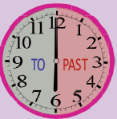
When the minute hand is on the right hand side of the clock. (from 12 hours to 6 hours) we read the time as dash minute past dash hour.
Example:
25 minute past 4
Practise to say the time using "past"
![There are 7 clocks. First clock shows 4,o clock. In the Second clock the hour is at 4 and the minute hand is at 1. So the time is 4.05. In third clock the minute hand shows 2 and the hour hand shows 4.Time is 4.10 (or) 10 minutes past 4. In fourth clock the minute hand is at 3 and the hour hand is at 4.Time is 4.15,15 minutes past 4 (or) quarter past 4. In fifth clock, the minute hand is at 4 and the hour hand shows 4. Time is 4.20 (or) 20 minutes past 4. In sixth clock, the minutes hand shows 5 and the hour hand shows 4. .Time is 4.25 (or) 25 minutes past 4. In seventh clock, the minute hand shows 6 and the hour hand is between 4 and 5. Time is 4.30, 30 minutes past 4 (or) half past 4.](images/image-50.png)
Practise to say the time using "To"
![Five clocks are given here. In the first clock, the minute hand is at 7 and the hour hand lies between 4 and 5. Now the Time is 4.35 (or) 25 minutes to 5. In the second clock, the minute hand of the clock is at 8 and the hour hand lies between 4 and 5. In the third clock, the minute hand is at 9 and the hour hand is nearer to 5.The time is 4.45 , 15 mins to 5 (or)Quarter to 5. In the fourth clock, the minute hand is at 10 and the hour hand is at 5. Now the time is 4.50 (or) 10 mins to 5. In the fifth clock, the minute hand shows 11 and the hour hand shows 5. Now the time is 4.55 (or) 5 mins to 5.](images/image-51.png)
Try these
Say the following time in appropriate ways:
a) 9.20
b) 4.50
c) 5.15
d) 6.45
e) 11.30
Calculation of time to the nearest seconds is very essential in some situations like launching rocket, running race, arrival and departure. So, we need to know the conversion of time.
Let us remember the time related chart as follows:
Example 12: A farmer ploughed the field for 3 hours 35 minutes. How many minutes did he plough?
Solution:
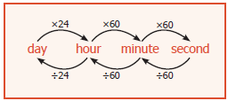
Time for which the farmer ploughed the field equal to 3 hours and 35 minutes
equal to 3 into 60 minutes plus 35 minutes
equal to 180 minutes plus 35 minutes
equal to 215 minutes
Examples 13: A handloom weaver takes 6 hours 20 minutes 30 seconds and 5 hours 50 minutes 45 seconds to weave two silk sarees. What is the total time to weave the two silk sarees?
Solution:
|
Hours |
Minutes |
Seconds |
Time taken to weave the first silk saree |
6 Hours |
20 Minutes |
30 Seconds |
Time taken to weave the second silk saree |
5 Hours |
50 Minutes |
45 Seconds |
Total Time taken to weave the two silk sarees |
(11 hours plus 60 minutes) equal to 12 hours |
10 minutes plus 60 seconds equal to 11 minutes |
15 seconds |
Example 14: A satellite is placed in its orbit in 7 hours 16 minutes 20 seconds. Calculate it in seconds.
Solution: The satellite reaches its orbit in 7 hours plus 16 minutes plus 20 seconds
equal to (7 into 60 into 60) seconds plus(16 into 60) seconds plus 20 seconds
equal to 25200 seconds plus 960 seconds plus 20 seconds
equal to 26,180 seconds
The satellite reaches its orbit in 26,180 seconds
Example 15: Two cyclists took 5 hours 35 minutes 10 seconds and 8 hours respectively to cover the same distance. Find the difference in time taken by them
Solution:
Hours |
Minutes |
Seconds |
7 8 Hours |
59Minute 60 00 |
60 Seconds
00 |
5 Hours |
35Minute |
10 Seconds |
2 Hours |
24Minute |
50 Seconds |
Try these
Convert the following:
The 12-hour clock has ante meridiem (a m) and post meridiem (p m) because the number of hours in a day is divided into day and night. In the clock, exactly 12.00 at night is called midnight; and exactly 12.00 at day is called noon. ante meridiem denotes the time that is after 12:00 midnight and before 12:00 noon.post meridiem denotes the time that is after 12:00 noon and before 12:00 midnight.
Example:
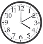
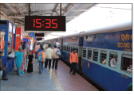
Generally, we use 12-hour clock but Railways, Airways, Defense forces and Television networks use 24 hour clock to avoid morning or evening confusions. When you are in a railway station, you can hear the announcement and see the use of hours instead of ante meridiem and post meridiem, because they follow the 24 hour format. Therefore, there is no need to say morning and evening in their time. Railway time is usually denoted in 4 digits. The first two digits shows the hours and the last two digits shows the minutes. For example, 5 post meridiem is denoted as seventeen hours.
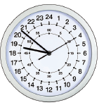
Example: 7 o’ clock morning equal to 07:00 hours
1 o’ clock evening equal to thirteen hours (12 plus 1 hour)
That is., after 12 noon they count continuously up to 24 hours.
12 midnight is written as 00:00 hours or 24:00 hours.
12 noon is written as 12:00 hours
Let us observe the clock. Remember the following points while converting from one type of time to another type
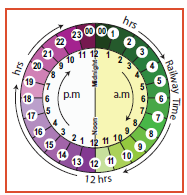
To convert 12 hour time to 24 hour time, simply change 12 hours as zero zero colon zero zero hours between 12.00 midnight and 01.00 ante meridiem there is no change up to 01.00 post meridiem. Add 12:00 hours to any hour from 01.00 post meridiem
To convert 24 hour time to 12 hour time simply change 00:00 hours as 12 hours between 00:00 hours and 01:00 hour. There is no change up to 13 hours. Subtract 12:00 hours from any hours from 13 hours. Minutes will not change in both the formats
Convert into the 12 hour format: (Ordinary time)
24 hour format |
Greater than 12 hour |
If greater than 12 hour then subtract 12 |
12 hour format |
09:25 hours |
Greater than 12 hour No |
- |
9.25 ante meridiem |
18:40 hours |
Greater than 12 hour Yes |
18 minus 12equal to 6 |
6.40 post meridiem |
03:15 hours |
Greater than 12 hour No |
- |
3.15 ante meridiem |
15:30 hours |
Greater than 12 hour Yes |
(15 minus 12 equal to 3) |
3.30 post meridiem |
23:50 hours |
Greater than 12 hour Yes |
(23 minus 12equal to 11) |
11.50 post meridiem |
12 hour time |
ante meridiem or post meridiem |
Add 12 hour to post meridiem |
24 hour time |
04:15 ante meridiem |
ante meridiem |
- |
04.15 hours |
0.7.40 post meridiem |
post meridiem |
(7 plus 12) hours |
19.40 hours |
10.05 post meridiem |
post meridiem |
(10 plus 12) hours |
22.05 hours |
06.00 ante meridiem |
ante meridiem |
- |
06.00 hours |
12.25 ante meridiem |
ante meridiem |
- |
00.25 hours |
Try these
Convert the 12 hour format into the 24 hour format and vice versa
10.40 ante meridiem equal to 10:40 hours
11 ante meridiem equal to 11:00 hours
1.15 ante meridiem equal to dash hours
5 ante meridiem equal to dash hours
16:20 hours equal to dash ante meridiem or post meridiem
00:40 hours equal to dash ante meridiem or post meridiem
1 post meridiem equal to 13:00 hours
11.15 post meridiem equal to 23:15 hours
3 post meridiem equal to dash hours
12 midnight equal to dash hours
12:25 hours equal to dash ante meridiem or post meridiem
4:10 hours equal to dash ante meridiem or post meridiem
Example16: Find the duration between 6 ante meridiem and 4 post meridiem
Solution :
Method 1
Conversion of 6 ante meridiem to Railway time equal to 06:00 hours
Conversion of 4 post meridiem to Railway time equal to (4 plus 12) hours equal to 16 hours
Time duration between 6 ante meridiem and 4 post meridiem equal to The difference between 16 hours and
6 hours equal to 16 hours minus 6 hours equal to 10 hours
Method 2
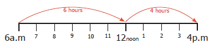
Example 17:
The arrival and departure timings of the Chennai to Trichy Express are given below.
Station |
Arrival |
Departure |
Chennai Egmore |
Arrival Dash |
Departure 20:30 |
Chengalpattu |
Arrival 21:30 |
Departure 21:32 |
Villupuram junction |
Arrival 23:15 |
Departure 23:25 |
Virudhachalam junction |
Arrival 00: zero 7 |
Departure 00:10 |
Trichy |
Arrival 04:30 |
Departure Dash |
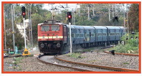
Question Number (1) At what time does the train depart from Chennai Egmore to arrive at Trichy? The train departs from Egmore at 20:30 hours to arrive Trichy at 4:30 hours.
Question Number (2) How long does it halt at Villupuram? It halts at Villupuram for 10 minutes.
Question Number (3) How many halts are there in between Chennai and Trichy ? There are 3 halts
(1) Chengalpattu (2) Villupuram (3) Virudhachalam
Question Number (4) Find the total journey time of the train from Chennai to Trichy.
Hint: If the journey crosses the midnight, calculate the time duration from starting hours to midnight, then from midnight to arrival time.
Method 1
Duration up to midnight
Midnight : 24 :00 hours
Starting time : 20 :30 hours
Duration : 03:30 hours
Method 2
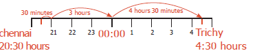
Total journey time equal to 3 hours 30 minutes plus 4 hours 30 minutes
equal to 7 hours 60 minutes
equal to 7 hours plus1 hour equal to 8 hours
Duration from midnight to arrival equal to 4 hours 30 minutes
Total journey time equal to Duration up to midnight plus Duration from midnight to arrival
equal to 3 hours 30 minutes plus 4 hours 30 minutes
equal to 7 hours 60 minutes equal to 7 hours plus 1 hour equal to 8 hours
Example 18:
The clock is set at 7 ante meridiem. If the clock slows down two minutes every hour, find the time
shown by the clock at 6 post meridiem.
Solution : Time slowed down for 1 hour equal to 2 minutes
Time slowed down for 11 hours equal to11 into 2 equal to 22 minutes
So, at 6 pm the clock slows down by 22 minutes. That means the clock shows 5 hours 38 minutes at 6 post meridiem.
Ordinary time |
Railway time |
6.00 post meridiem |
Eighteen hours |
7.00 ante meridiem |
07:00 hours |
Time duration |
11:00 hours |
A year is the time taken by the Earth to make one revolution around the Sun. A year has 12 months or 365 days. Each month is divided into weeks. A month has 4 weeks and a few more days. A week is of 7 days. A month has 30 days or 31 days except February. February has 28 or 29 days.
We know that the Earth revolves around the Sun as well as rotates to itself. The Earth takes 365 days 6 hours to make a complete revolution around the sun. We take 365 days as one year. To adjust 6 hours each year, we add one day to every fourth year (4 years into 6 hours equal to 24 hours equal to 1 day). Every 4th year has 365 plus1 day equal to 366 days and one day is added to the month of February. Therefore, a year which has 366 days is called a Leap Year. In a Leap Year the month of February has 29 days. Every year you are celebrating birthday. If a person's birthday falls on 29th February, he or she has to celebrate the birthday once in 4 years only.
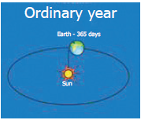
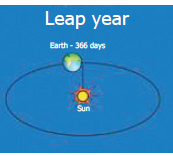
How can we identify a leap year?
Roman Letter 1. Generally a year which is divisible by 4 is considered as a leap year.
Examples:
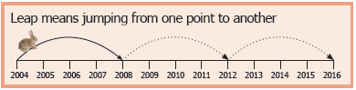
1. Two thousand sixteen is a leap year, because two thousand sixteen is exactly divisible by 4
2. Two thousand eighteen is not divisible by 4 and it leaves remainder. So, it is not a leap year.
II In centuries:
Years which are multiples of 100 are centuries, such as thousand hundred comma thousand two hundred comma thousand three hundred comma thousand nine hundred comma two thousand comma two thousand hundred etcetera. The century which is divisible by 400 is a leap year.
Think
Why do we divide the centuries by 400 to find whether it is leap year or not dash?
Examples:
1. thousand two hundred is divisible by 400; and so, it is a leap year.
2. thousand seven hundred is not divisible by 400. and so, it is not a leap year.
Example 19: If Wednesday falls on 20th of December two thousand seventeen. What is the day on 8th
June two thousand eighteen? Also say the number of days between these two dates.
Month |
Days |
December |
12 (31-19) |
January |
31 |
February |
28 (two thousand eighteen is a non-leap year) |
March |
31 |
April |
30 |
May |
31 |
June |
7 |
Total |
170 days |
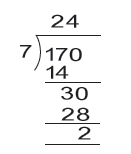
170 days divided by 7 (why?)
170 days equal to 24 weeks plus2 days
Required day is the second day after Wednesday.
Therefore 8th of June is Friday.
Example 20: Mala's date of birth is 20-11-1999. What is her age on 05-10-2018?
Solution:
Convert in the format: Year/Month/Day
Year |
Month |
Day |
2017 |
21(9 plus 12) |
35(5 plus 30) |
2018 |
10 |
05 |
1999 |
11 |
20 |
18 years |
10 months |
15 days |
Mala’s age: 18 years 10 months 15 days
Activity
1. Collect some famous personalities whose birthday falls on 29th February.
2. Collect the interesting facts about Big Ben clock in London.
Try these
Question Number 1. Check whether the following years are Ordinary or Leap Year? 1994; 1985; 2000; 2007; two thousand ten; 2100
Question Number 2. How many days are there from 1st April to 30th June?
A Jubilee is a particular anniversary of an event
Silver Jubilee |
Twenty fifth anniversary |
Ruby Jubilee |
Fortieth anniversary |
Golden Jubilee |
Fiftieth anniversary |
Diamond Jubilee |
Sixtieth anniversary |
Sapphire Jubilee |
Sixty fifth anniversary |
Platinum Jubilee |
Seventieth anniversary |
10 years equal to 1 decade
100 years equal to 1 century
1000 years equal to 1 millennium
21st century 2001 to 2100, we are in this century
3rd millennium - 2001 to 3000 years, we are in this millennium
ICT Corner
Measurements
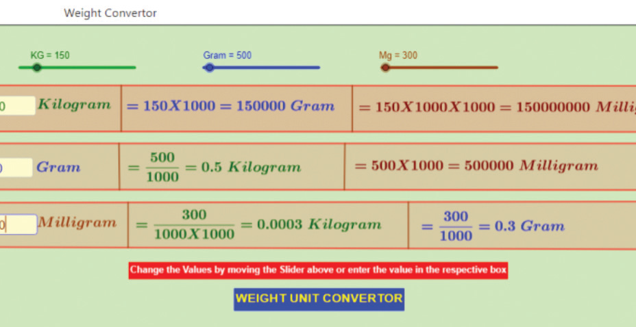
Step 1
Open the Browser and type the URL Link given below (or) Scan the QR Code. GeoGebra work sheet named “Measurement Unit convertor” will open. The work sheet contains three activities.
1. Length convertor and
2. Weight convertor and
3. Convertor for all measurements
In the first activity move the sliders to change the value of kilometre, metre and centimetre and check the conversion.
Step 2
In the second activity move the sliders to change the value of Kilogram, Gram and Milligram and check the conversion.
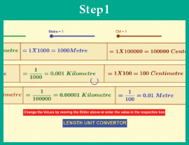
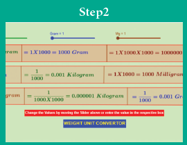
Browse in the link: Measurements: https://ggbm.at/p7DZHP6K or Scan the QR Code.
Exercise 2.2
Question Number 1. Say the time in two ways:
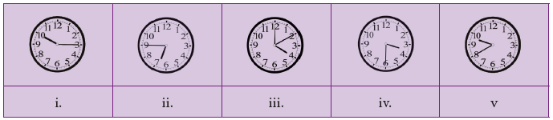
Question Number 2. Match the following:
(1) 9.55 |
a. 20 minutes past 2 |
(2) 11.50 |
b. quarter past 4 |
(3) 4.15 |
c. quarter to 8 |
(4) 7.45 |
d. 5 minutes to 10 |
(5) 2.20 |
e. 10 minutes to 12 |
Question Number 3. Convert the following:
(1) 20 minutes into seconds
(2) 5 hours 35 minutes 40 seconds into seconds
(3) 3 and half hours into minutes
(4) 580 minutes into hours
(5) 25200 seconds into hours
Question Number 4. The duration of electricity consumed by the farmer for his pump set on Monday and Tuesday was 7 hours 20 minutes 35 seconds and 3 hours 44 minutes 50 seconds respectively. Find the total duration of consumption of electricity.
Question Number 5. Subtract 10 hours 20 minutes 35 seconds from 12 hours 18 minutes 40 seconds
Question Number 6. Change the following into 12 hour format
(1) 02:00 hours
(2) 08:45 hours
(3) 21:10 hours
(4) 11:20 hours
(5) zero zero midnight hours
Question Number 7. Change the following into 24 hour format
(1) 3.15 am
(3) 12.35 pm
(4) 12.00 noon
(5) 12.00 midnight
Question Number 8. Calculate the duration of time
(1) from 5.30 ante meridiem to 12.40 post meridiem
(2) from 1.30 post meridiem to 10.25 post meridiem
(3) from 20:00 hours to 4:00 hours
(4) from 17:00 hours to 5:15 hours
Question Number 9. The departure and arrival timing of the Vaigai Superfast Express (Number. 12635) from Chennai Egmore to Madurai Junction are given. Read the details and answer the following.
Station |
Arrival |
Departure |
Chennai Egmore |
- |
Departure 13:40 |
Thambaram |
Arrival 14:08 |
Departure 14:10 |
Chengalpattu |
Arrival 14:38 |
Departure 14:40 |
Vilupuram |
Arrival 15:50 |
Departure 15:55 |
Virudhachalam |
Arrival 16:28 |
Departure 16:30 |
Ariyalur |
Arrival 17:04 |
Departure 17:05 |
Thrichy |
Arrival 18:30 |
Departure 18:35 |
Dindigul |
Arrival 20:03 |
Departure 20:05 |
Sholavandan |
Arrival 20:34 |
Departure 20:35 |
Madurai |
Arrival 21:20 |
- |
(1) At what time does the Vaigai Express start from Chennai and arrive at Madurai?
(2) How many halts are there between Chennai and Madurai?
(3) How long does the train halt at the Vilupuram junction?
(4) At what time does the train come to Sholavandan?
(5) Find the journey time from Chennai Egmore to Madurai?
Question Number 10. Manickam joined a chess class on 20.02.2017 and due to exam, he left practice after 20 days. Again he continued practice from 10.07.2017 to 31.03.2018. Calculate how many days did he practice?
Question Number 11. A clock gains 3 minutes every hour. If the clock is set correctly at 5 am, find the time shown by the clock at 7 pm?
Question Number 12. Find the number of days between the Republic day and Kalvi Valarchi Day in the year 2020.
Question Number 13. If 11th of January 2018 is Thursday , what is the day on 20th July of the same year?
Question Number 14. (1) Convert 480 days into years.
(2) Convert 38 months into years.
Question Number 15. Calculate your age as on 01.06.2018
Objective Type Questions
Question Number 16. 2 days equal to dash hours.
a) 38
b) 48
c) 28
d) 40
Question Number 17. 3 weeks equal to dash days
a) 21
b) 7
c) 14
d) 28
Question Number 18. Number of ordinary years between two consecutive leap years is dash
a) 4 years
b) 2 years
c) 1 year
d) 3 years
Question Number 19. What time will it be 5 hours after 22:35 hours ?
a) 2:30 hours
b) 3:35 hours
c) 4:35 hours
d) 5:35 hours
Question Number 20. 2and half years is equal to dash months.
a) 25
b) 30
c) 24
d) 5
Exercise 2.3
Miscellaneous practice Problems
Question Number 1. Two pipes whose lengths are 7 meter 25 centimeter and 8 meter 13 centimeter joined by welding and then a small piece 60 centimeter is cut from the whole. What is the remaining length of the pipe?
Question Number 2. The saplings are planted at a distance of 2 meter 50 centimeter in the road of length 5 kilometer by Saravanan. If he has 2560 saplings, how many saplings will be planted by him? how many saplings are left?
Question Number 3. Put Tick mark in the circles which adds up to the given measure.
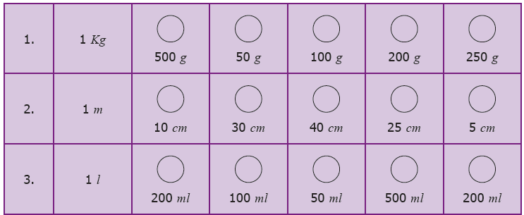
Question Number 4. Make a calendar for the month of February two thousand twenty. (Hint: January 1st two thousand twenty is Wednesday)
Question Number 5. Observe and Collect the data for a minute:
1 |
Number of times a person breathes |
dash |
2 |
Number of sit-ups |
dash |
3 |
Number of times heart beats |
dash |
4 |
Number of claps |
dash |
5 |
Number of times the eyes blink |
dash |
6 |
Number of lines to write |
dash |
7 |
Distance by walking |
dash |
8 |
Number of lines to read |
dash |
9 |
Distance by running |
dash |
10 |
Number of Tamil verbs to say |
dash |
Challenge Problems
Question Number 6. A squirrel wants to eat the grains quickly. Help the Squirrel to find the shortest way to reach the grains. (Use your scale to measure length of the line segments)
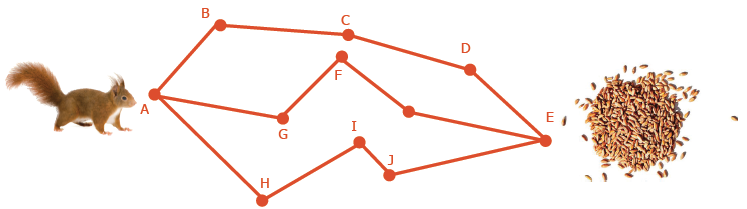
Question Number 7. A room has a door whose measures are 1 meter wide and 2-meter 50 centimeter high.
one. Can we take a bed of 2 meter and 20-centimeter length and 90 centimeter wide into the room.?
Question Number 8. A post office functions from 10 am to 5. 45 pm with a lunch break of 1 hour. If the post office works for 6 days a week, find the total duration of working hours in a week.
Question Number 9. Seetha wakes up at 5. 20 am. She spends 35 minutes to get ready and travels 15 minutes to reach the railway station. If the train departs exactly at 6:00 am, will Seetha catch the train?
Question Number 10. A doctor advised Vairavan to take one tablet every 6 hours once in the 1st day and once every 8 hours on the 2nd and 3rd day. If he starts to take 9. 30 am first dose. Prepare a time chart to take tablet in railway time.
Summary
Basic metric units of length is metre, weight is gram and capacity (volume) is litre.
Different unit measurements should be converted into same unit for addition and subtraction of units.
am (ante meridiem) denotes the time that is after 12:00 midnight and before 12:00 noon.
pm (post meridiem) denotes the time that is after 12:00 noon and before 12:00 midnight.
To convert 12-hour time to 24-hour time, add 12 to any hours 1 pm to 11 pm and change 12 am as zero zero colon zero zero hours
To convert given time greater than 12 in railway time to an ordinary time, subtract 12 from it.
Ordinary and Railway time are the same in a.m and it is less than 12.
In both the formats there is no change in minutes.
A year which is divisible by 4 is considered as a leap year.
A century year which is divisible by 400 is a leap year.
Learning Objectives
To prepare a bill and verify the bill amount.
To calculate profit and loss.
To calculate Cost Price (C.P.), Selling Price (S.P.), Marked Price (M.P.) and Discount.
As everyone cannot produce each and every commodity that he or she uses in the day-to-day life, one has to buy them from companies, firm, stores, shops or individuals. In all these activities, business takes place. So, business is an organized effort of individuals to produce and sell the commodities that satisfies the needs of the society. Every business involves bills, profit, loss etcetera. In this chapter, we are going to learn about the bills that we come across in everyday life. Also, we will learn about profit and loss in a transaction of a business.
An example of Bill
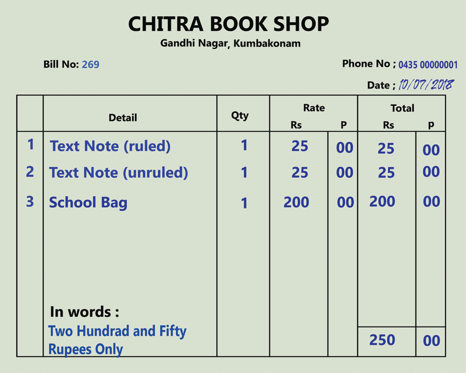
An example of Sale Counter
Kothai is getting ready for Term – II studies in her school. Her mother gives Kothai Rupees 300 to purchase the stationery items like note book, pen, pencil, geometry box etcetera. Kotahi purchased some stationery items and brought home the following bill.
CASH BILL
ABC STATIONERY MART, PERIYAR SAALAI, ERODE
BILL NUMBER .75 Date: 20.04. Two Thousand Eighteen
Serial number |
Items |
Quantity |
Rate (in ₹) |
Amount (in ₹) |
Serial number 1. |
Item 192 pages unruled note books |
Quantity 3 |
Rate Rs. 21 |
Amount Rs.63 |
Serial number 2. |
Item Ink pen |
Quantity 2 |
Rate Rs. 35 |
Amount Rs.70 |
Serial number 3. |
Item Pencil |
Quantity 2 |
Rate Rs.15 |
Amount Rs.30 |
Serial number 4. |
Item Eraser |
Quantity 1 |
Rate Rs.5 |
Amount Rs.5 |
Serial number 5. |
Item Geometry Box |
Quantity 1 |
Rate Rs.52 |
Amount Rs.52 |
|
Total |
Quantity 9 |
|
Amount Rs.220 |
From the above bill, Kothai understands that the bill has the following details.
1. Name of the shop.
2. Serial number of the bill.
3. Date on which the bill is produced.
4. The list of items purchased.
5. Cost of each item.
6. Total number of items purchased.
7. Amount paid for the purchase.
8. Tax details. You will learn in the higher classes.
After the purchase, she has some amount left with her. She wants to verify whether the expenses made by her are correct.
Kothai verifies the above bill as follows:
Item 1. 21 into 3 equal to 63
Item 2. 35 into 2 equal to 70
Item 3. 15 into 2 equal to 30
Item 4. 5 into 1 equal to 5
Item 5. 52 into 1 equal to 52
Total Rupees.220
Think
If 55 bills are produced on a day, then which information is same on all the bills?
Kothai’s father asks some questions about the bill and
Kothai answers him as follows.
(1) How many notebooks are purchased ? 3
(2) What is the cost of each pen ? ₹35
(3) What is the amount paid for pencils ? ₹30
(4) How much the shopkeeper will give you back if you give 3 currencies of ₹100 ? ₹80
Activity
Raise a few more questions on this bill.
Arivu purchased the following vegetables from a petty shop.
2 kilogram of Brinjal @ ₹12 per kilogram, 3 kilograms of Onion @ ₹16-kilogram, 3 kilogram of Tomato @ ₹20 per kilogram and 2 kilogram of Potato @ ₹24 per kilogram.
The shopkeeper of a petty shop doesn’t provide the bill. So, Arivu prepares the bill as follows, which helps him to verify whether he has paid correct amount for the purchase.
CASH BILL
PQR Vegetable Shop
Vivekananda Street, Trichy
BILL NUMBER.786,
Date: 25.04.2018
Serial Number |
Items |
Quantity (in Kilogram) |
Rate (in ₹) |
Amount (in ₹) |
Serial Number 1. |
Brinjal |
2 Kilogram |
Rate Rupees 12 |
Amount Rupees 24 |
Serial Number 2. |
Onion |
3 Kilogram |
Rate Rupees 16 |
Amount Rupees 48 |
Serial Number 3. |
Tomato |
3 Kilogram |
Rate Rupees 20 |
Amount Rupees 60 |
Serial Number 4. |
Potato |
2 Kilogram |
Rate Rupees 24 |
Amount Rupees 48 |
|
Total |
|
|
Amount Rupees 180 |
DO YOU KNOW
@ represents "at the rate of"
Think
Will there be any change in the value of the bill if the columns ‘Rate’ and ‘Quantity’ are interchanged?
Example 1: Ramya purchases some make-up items and gets the following bill.
CASH BILL SHANTHI FANCY STORE
BILL NUMBER. Hundred
Date: 15.05. Two Thousand Eighteen
Serial Number |
Items |
Rate (in ₹) |
Quantity |
Amount (in ₹) |
Serial Number 1. |
Hair clip |
Rupees 15 each |
Quantity 6 |
Amount Rupees 90 |
Serial Number 2. |
Hair pin |
Rupees 10 each |
Quantity 4 |
Amount Rupees 40 |
Serial Number 3. |
Ribbon |
Rupees 12 per meter |
Quantity 3 |
Amount Rupees 36 |
Serial Number 4. |
Handkerchief |
Rupees 25 each |
Quantity 2 |
Amount Rupees 50 |
|
Total |
|
|
216 |
Observe the bill and answer the following questions.
Question Number (1) What is the bill number?
Question Number (2) Mention the date of the bill.
Question Number (3) How many different items were purchased?
Question Number (4) What is the cost of an hair clip?
Question Number (5) What is the total cost of the ribbon?
Solution:
(1) The bill number is 100.
(2) The date of the bill is 15.05.TWO THOUSAND EIGHTEEN.
(3) There were four different items purchased.
(4) The cost of 1 hair clip is ₹15.
(5) The total cost for the ribbon is ₹36.
Note
Most of the bills will have GST in them. GST stands for Goods and Services Tax, which is a single indirect tax in India which has been recently introduced to replace all other taxes like Service Tax, VAT, etcetera. The GST is imposed at various rates on various items. The GST is of two types. They are Central GST (CGST) and State GST (SGST).
Example 2: Prepare a bill for the following purchases at Aavin sales counter in Coimbatore on 25-06-2018 bearing the Bill number 160.
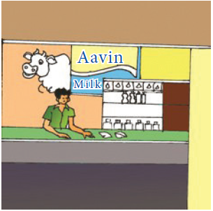
Question Number 1. 5 packets Milk Khoa of 100 @ ₹40 each
Question Number 2. 5 packets of Butter Milk @ ₹8 each
Question Number 3. 6 packets Milk of 500 millilitre @ ₹25 each
Question Number 4. 5 packets Ghee of 100 gram @₹40 each
Solution:
1. Milk Khoa 5 into ₹40 equals ₹200
2. Butter Milk 5 into ₹ 8 equals ₹ 40
3. Milk 6 into ₹25 equals ₹150
4. Ghee 5 into ₹40 equals ₹200
Total ₹590
CASH BILL. AAVIN PARLOUR, COIMBATORE
BILL NUMBER. 160
Date: 25.06.Two Thousand Eighteen
Serial number |
Items |
Rate (in ₹) |
Quantity |
Amount (in ₹) |
Serial number 1. |
Mil Khoa |
Rate Rupees 40 per packet |
Quantity 5 |
Amount Rupees 200 |
Serial number 2. |
Butter milk |
Rate Rupees 8 per packet |
Quantity 5 |
Amount Rupees 40 |
Serial number 3. |
Milk |
Rate Rupees 25 per packet |
Quantity 6 |
Amount Rupees 150 |
Serial number 4. |
Ghee |
Rate Rupees 40 per packet |
Quantity 5 |
Amount Rupees 200 |
|
Total |
|
|
Amount Rupees 590 |
In our day-to-day life, we use many commodities like food, clothes, vehicles, books etcetera. Everything is produced by someone or by a team of people and sold directly to the people or through the dealers. When we buy anything, a dealer charges more than what the manufacturer charges. Because, the dealer invests some money to buy the goods, spends his time to bring them to his place and he wants to earn a bit more money than his investment. The excess money that the dealer collects from the people is called gain or profit. If he is in the situation of collecting less money than what he has paid to the manufacturer due to the urgent need of money or some other reason, he loses some money. This losing of money in his investment is called loss. This process of buying and selling goods involves either profit or loss. We shall discuss this in detail.
Think
The C.P. of a commodity differs from the manufacturer to the dealer or the shopkeeper. Why? Discuss.
Cost Price (C.P.)
A shopkeeper purchases goods from a manufacturer or a supplier. This is called Purchase Price. He also meets out the overhead expenses like transport charges, wages, etcetera. So, the Cost Price (C.P.) consists of the capital, the cost of raw materials, the labor charges for production, the electricity charges, the transport charges etcetera.
C.P. equal to Purchase price plus Overhead expenses
For example, ABC Cars, the car manufacturing company buys raw materials for ₹ two lakh per car, pays ₹70,000 to laborers, ₹15,000 towards electricity bill, ₹10,000 towards transports. Therefore, the Cost Price (C.P.) of a car produced is ₹ two lakh plus ₹70,000 plus ₹15,000 plus ₹10,000 equal to ₹ two lakh ninety five thousand.
Note
The shopkeeper may require to spend some amount to bring the purchased commodities, like transport charges, wages to workers, toll fee etcetera., which come as part of "overhead expenses".
Marked Price (M.P.)
When a shopkeeper takes the goods from the dealer to his outlet for sales, he has to make profit in his business. So, he marks the price higher than the cost price of the goods. This price is called as Tag price or Marked Price (M.P.).
In the above example, ABC cars likes to make ₹50,000 as its profit. So, it fixes up the Marked Price (M.P.) of the car as ₹ two lakh ninety five thousand plus ₹50,000 equal to ₹ three lakh forty five thousand.
Discount
The reduction of cost on the Marked Price for the purpose of attracting the customers or some other reasons is called Discount.
To increase the sales, ABC cars is ready to reduce ₹5,000 to its customers, who is buying the car. Here the discount is ₹5,000.
Note
M.R.P. is Maximum Retail Price, which is fixed by the manufacturer. No commodity can be sold beyond this price.
Think
Which is greater M.P. or C.P.?
Selling Price (S.P.)
The amount that a customer pays to a commodity, after availing the discount (wherever possible) is called as Selling Price (S.P.).
The Marked Price of the car is ₹ three lakh forty five thousand. The S.P. of the car sold by ABC cars is ₹ three lakh forty five thousand minus ₹5,000 equal to ₹ three lakh forty thousand. that is., M.P. minus Discount equal to S.P.
From the above discussion we can come to the following conclusions.
If C.P. is less than S.P., there is Profit Profit equal to S.P. minus C.P.
If C.P. is greater than S.P., there is loss Loss equal to C.P. minus S.P.
If C.P. equal to S.P., there is no profit or loss.
Discount equal to M.P. minus S.P. (or) S.P. is equal to M.P. minus Discount.
If there is no discount, then M.P.is equal to S.P.
Example 3: Fill up the appropriate boxes in the following table:
Serial Number |
C.P. |
S.P. |
Profit |
Loss |
Serial Number (1) |
C.P. ₹50 |
S.P. ₹60 |
Profit dash |
Loss dash |
Serial Number (2) |
C.P. ₹70 |
S.P. ₹60 |
Profit dash |
Loss dash |
Serial Number (3) |
C.P. ₹100 |
S.P. dash |
Profit ₹20 |
Loss dash |
Serial Number (4) |
C.P. ₹80 |
S.P. dash |
Profit dash |
Loss ₹15 |
Serial Number (5) |
C.P. dash |
S.P. ₹70 |
Profit ₹25 |
Loss dash |
Serial Number (6) |
C.P. dash |
S.P. ₹100 |
Profit dash |
Loss ₹30 |
Think
Which is greater S.P. or M.P.?
Solution :
(1) C.P.less than S.P. Profit equal to S.P. minus C.P. equal to ₹60 minus ₹50 equal to ₹10
(2) C.P. greater than S.P. Loss equal to C.P. minus S.P. equal to ₹70 minus ₹60 equal to ₹10
(3) Profit equal to S.P. minus C.P.
₹20 equal to S.P. minus ₹100
S.P. equal to ₹20 plus ₹100 equal to ₹120
(4) Loss equal to C.P. minus S.P.
₹15 equal to ₹80 minus S.P.
S.P. equal to ₹80 minus ₹15 equal to ₹65
(5) Profit equal to S.P. minus C.P.
₹25 equal to ₹70 minus C.P.
C.P. equal to ₹70 minus ₹25 equal to ₹45
(6) Loss equal to C.P. minus S.P.
₹30 equal to C.P. minus ₹100
C.P. equal to ₹30 plus ₹100 equal to ₹130
Example 4: A table is bought for ₹4500 and sold for ₹4800. Find the profit or loss.
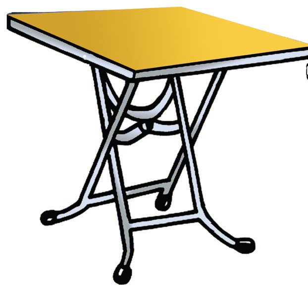
Solution:
C.P. equal to ₹4500
S.P. equal to ₹4800
Here, C.P. is less than S.P. Profit equal to S.P. minus C.P.
equal to ₹4800 minus ₹4500 equal to ₹300
Example 5: A fruit seller bought a basket of fruits for ₹500. During the transit some fruits were damaged. So, he was able to sell the remaining fruits for ₹480. Find the profit or loss in his business.
Solution:
C.P. equal to ₹500
S.P. equal to ₹480
Here, C.P. is greater than S.P. Loss equal to C.P. minus S.P. equal to ₹500 minus ₹480 equal to ₹20
Example 6: Paari bought a Motor cycle for ₹55,000 and he gained ₹5500 on selling the same. What is the selling price of the motor cycle?
Solution:
C.P. equal to ₹55,000
Profit equal to ₹5,500
Profit equal to S.P. minus C.P.
₹5,500 equal to S.P. minus ₹55,000
S.P. equal to ₹5,500 plus ₹55,000 equal to ₹60,500
Example 7: Manimegalai purchased a house for ₹ twenty five lakh fifty two thousand five hundred and spent ₹ two lakh twenty eight thousand three hundred and fifty for its repair. She sold it for ₹ thirty lakh fifty two thousand. Find her gain or loss.
Solution:
C.P. equal to ₹ twenty five lakh fifty two thousand five hundred plus two lakh twenty eight thousand three hundred and fifty equal to ₹ twenty seven lakh eighty thousand eight hundred and fifty
S.P. equal to ₹ thirty lakh fifty two thousand
C.P. less than S.P. Profit equal to S.P. minus C.P. equal to ₹ thirty lakh fifty two thousand minus ₹ twenty seven lakh eighty thousand eight hundred and fifty equal to ₹ two lakh seventy one thousand one hundred and fifty
Example 8: A man bought 75 Mangoes for ₹300 and sold 50 Mangoes for ₹300. If he sold all the mangoes at the same price, find his profit or loss.
Solution:
If the man bought 75 Mangoes for ₹300 then, Cost Price of 1 Mango equal to 300 divided by 75 equal to ₹4
If 50 Mangoes were sold for ₹300 then, Selling Price of 1 Mango is 300 divided by 50 equal to ₹6
Therefore Selling price of 75 Mangoes at the rate of ₹6 is 75 into 6 equal to ₹450
Selling Price is greater than Cost Price
Therefore Profit is equal to Selling Price minus Cost Price equal to 450 minus 300 equal to ₹150
Example 9: A fruit seller bought a dozen apples for ₹84. 2 apples got rotten. If he has to get a profit of ₹16, find the S.P. of each apple.
Solution :
Cost price of 12 apples equal to ₹84.
Since 2 apples got rotten, the number of remaining apples equal to 10
Since profit is ₹16, Selling price of 10 apples is equal to C.P. plus Profit equal to ₹84 plus ₹16 equal to ₹100
Therefore Selling price of 1 apple equal to 100 divided by10 equal to ₹10
Example 10: Wheat is being sold at ₹1550 per bag of 25 kilogram at a profit of ₹150. Find the cost price of the wheat bag.
Solution :
Selling price equal to ₹1550
Profit equal to ₹150
Profit equal to S.P. minus C.P.
₹150 equal to ₹1550 minus C.P.
Cost price equal to ₹1550 minus ₹150 equal to ₹1400
Example 11: Complete the following table.
Serial Number |
C. P. in ₹ |
M.P. in₹ |
S.P. in ₹ |
Discount in ₹ |
Profit in ₹ |
Loss in ₹ |
Serial Number 1 |
C.P. Rupees 110 |
M.P. Rupees 130 |
S.P. Rupees dash |
Discount Rupees 5 |
Profit Rupees dash |
Loss Rupees dash |
Serial Number 2 |
C.P. Rupees 110 |
M.P. Rupees 130 |
S.P. Rupees dash |
Discount Rupees 20 |
Profit Rupees dash |
Loss Rupees dash |
Serial Number 3 |
C.P. Rupees dash |
M.P. Rupees 130 |
S.P. Rupees dash |
Discount Rupees 15 |
Profit Rupees 30 |
Loss Rupees dash |
Serial Number 4 |
C.P. Rupees dash |
M.P. Rupees 130 |
S.P. Rupees dash |
Discount Nil |
Profit Rupees dash |
Loss Rupees 25 |
Serial Number 5 |
C.P. Rupees dash |
M.P. Rupees 125 |
S.P. Rupees dash |
Discount Nil |
Profit Nil |
Loss Nil |
Serial Number 6 |
C.P. Rupees dash |
M.P. Rupees dash |
S.P. Rupees 350 |
Discount Rupees 50 |
Profit Rupees 100 |
Loss Nil |
Solution:
(1) C.P. equal to ₹110
M.P. equal to ₹130
Discount equal to ₹5
S.P. equal to M.P. minus Discount
equal to ₹130 minus ₹5
equal to ₹125
Profit equal to S.P. minus C.P.
equal to ₹125 minus ₹110
equal to ₹15
(2) C.P. equal to ₹110
M.P. equal to ₹130
Discount equal to ₹20
S.P. equal to M.P. minus Discount
equal to ₹130 minus ₹20
equal to ₹110
C.P. equal to S.P. No profit or No loss.
(3) M.P. equal to ₹130
Discount equal to ₹15
S.P. equal to M.P. minus Discount
equal to ₹130 minus ₹15
equal to ₹115
Profit equal to ₹30
Profit equal to S.P. minus C.P.
₹ 30 equal to ₹115 minus C.P.
C.P. equal to ₹115 minus ₹30
equal to ₹85
(4) M.P. equal to ₹130
Loss equal to ₹25
S.P. equal to M.P. minus Discount
equal to ₹130 minus ₹0
equal to ₹130
Loss equal to C.P. minus S.P.
₹25 equal to C.P. minus ₹130
C.P. equal to ₹25 plus ₹130
equal to ₹155
(5) M.P. equal to ₹125
Discount equal to ₹0
S.P. equal to M.P. minus Discount
equal to ₹125 minus ₹0
equal to ₹125
No profit or No loss
C.P. equal to S.P.
C.P. equal to ₹125
(6) S.P. equal to ₹350
Discount equal to ₹50
Profit equal to ₹100
M.P. equal to S.P. plus Discount
equal to ₹350 plus ₹50 equal to ₹400
Profit equal to S.P. minus C.P.
₹100 equal to ₹350 minus C.P.
C.P. equal to ₹350 minus ₹100
equal to ₹250
Example 12: Barathan offers his customers a discount of ₹50 on each shirt and still makes a profit of ₹100 per shirt. What is the actual cost price of the shirt that is marked @ ₹800?
Solution :
Discount equal to ₹50
Profit equal to ₹100
M.P. equal to ₹800
S.P. equal to M.P. minus Discount
equal to ₹800 minus ₹50
equal to ₹750
Profit equal to S.P. minus C.P.
₹100 equal to ₹750 minus C.P.
C.P. equal to ₹750 minus ₹100
equal to ₹650
Example 13: Raghu buys a chair for ₹3000. He wants to sell it at a profit of ₹500 after making a discount of ₹300. What is the M.P. of the chair?
Solution :
C.P. equal to ₹3000; Profit equal to ₹500; Discount equal to ₹300
S.P. equal to M.P. minus Discount equal to M.P. minus ₹300
Profit equal to S.P. minus C.P.
₹500 equal to M.P. minus ₹300 minus ₹3000
M.P. equal to ₹500 plus ₹300 plus ₹3000 equal to ₹3800
Example 14: Mani buys a gift article for ₹1500. He wants to sell it at a profit of ₹150 on sales and he marks @ ₹1800. What is the discount that he will give to his customers?
Solution :
C.P. equal to ₹1500; Profit equal to ₹150; M.P. equal to ₹1800
S.P. equal to M.P. minus Discount equal to ₹1800 minus Discount
Profit equal to S.P. minus C.P. ₹150 equal to ₹1800 minus Discount minus ₹1500
Discount equal to ₹1800 minus ₹1500 minus ₹150 equal to ₹150
ICT Corner
BILL, PROFIT AND LOSS
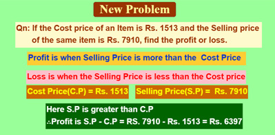
Step 1 Open the Browser and type the URL Link given below (or) Scan the QR Code. GeoGebra work sheet named “Profit and Loss” will open. The work sheet contains two activities. Click on “New Problem to change the problem. Read the given problem carefully.
Step 2 Work out yourself and check whether the answer is correct
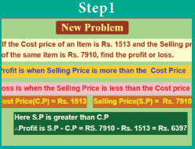
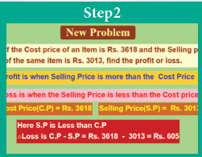
Browse in the following link:
BILLS, PROFIT and LOSS: https://ggbm.at/p7DZHP6K or Scan the QR Code.
Exercise 3.1
Question Number 1. A school purchases some furniture and gets the following bill.
CASH BILL
MULLAI FURNITURE MART, THANJAVUR
BILL NUMBER. 728
Date: 23.04.TWO THOUSAND EIGHTEEN
Serial Number |
Items |
Quantity |
Rate (in ₹) |
Amount (in ₹) |
Serial Number 1. |
Sitting bench |
Quantity 50 |
Rate Rupees Thousand two hundred |
Amount Rupees 60,000 |
Serial Number 2. |
Writing desk |
Quantity 50 |
Rate Rupees Thousand five hundred |
Amount Rupees 75,000 |
Serial Number 3. |
Black board |
Quantity 2 |
Rate Rupees 3000 |
Amount Rupees 6,000 |
Serial Number 4. |
Chair |
Quantity 10 |
Rate Rupees 950 |
Amount Rupees 9,500 |
Serial Number 5. |
Table |
Quantity 10 |
Rate Rupees 1750 |
Amount Rupees 17,500 |
|
Total |
|
|
Amount Rupees one lakh sixty eight thousand |
Questions:
(1) What is the name of the store?
(2) What is the serial number of the bill?
(3) What is the cost of a black board?
(4) How many sets of benches and desks does the school buy?
(5) Verify whether the total bill amount is correct.
Question Number 2. Prepare a bill for the following books of biographies purchased from Maruthu Book Store, Chidambaram on 12.04.2018 bearing the bill number 507. 10 copies of Subramanya Bharathiar @ ₹55 each, 15 copies of Thiruvalluvar @ ₹75 each, 12 copies of Veeramamunivar @ ₹60 each and 12 copies of Thiruvikaa @ ₹70 each.
Question Number 3. Fill up the appropriate boxes in the following table.
Serial Number |
C.P. in ₹ |
S.P. in ₹ |
Profit in ₹ |
Loss in ₹ |
Serial Number 1 |
C.P. Rupees 100 |
S.P. Rupees 120 |
Profit Rupees dash |
Loss Rupees dash |
Serial Number 2 |
C.P. Rupees 110 |
S.P. Rupees 120 |
Profit Rupees dash |
Loss Rupees dash |
Serial Number 3 |
C.P. Rupees 120 |
S.P. Rupees Dash |
Profit Rupees 20 |
Loss Rupees dash |
Serial Number 4 |
C.P. Rupees 100 |
S.P. Rupees 90 |
Profit Rupees dash |
Loss Rupees dash |
Serial Number 5 |
C.P. Rupees 120 |
S.P. Rupees dash |
Profit Rupees 25 |
Loss Rupees dash |
Question Number 4. Fill up the appropriate boxes in the following table.
Serial Number |
C.P. in ₹ |
M.P. in₹ |
S.P. in ₹ |
Discount in ₹ |
Profit in ₹ |
Loss in ₹ |
Serial Number 1 |
C.P. Rupees 110 |
M.P. Rupees 130 |
S.P. Rupees dash |
Discount NIL |
Profit Rupees dash |
Loss Rupees dash |
Serial Number 2 |
C.P. Rupees 110 |
M.P. Rupees 130 |
S.P. Rupees dash |
Discount Rupees 10 |
Profit Rupees dash |
Loss Rupees dash |
Serial Number 3 |
C.P. Rupees 110 |
M.P. Rupees 130 |
S.P. Rupees dash |
Discount Rupees 30 |
Profit Rupees dash |
Loss Rupees dash |
Serial Number 4 |
C.P. Rupees 110 |
M.P. Rupees 120 |
S.P. Rupees dash |
Discount Rupees dash |
Profit Rupees NIL |
Loss Rupees 10 |
Serial Number 5 |
C.P. Rupees dash |
M.P. Rupees 120 |
S.P. Rupees dash |
Discount Rupees 10 |
Profit Rupees 20 |
Loss Nil |
Question Number 5. Rani bought a set of bangles for ₹310. Her neighbor liked it most. So, Rani sold it to her for ₹325. Find the profit or loss to Rani.
Question Number 6. Sugan bought a Jeans pant for ₹750. It did not fit him. He sold it to his friend for ₹710. Find the profit or loss to sugan.
Question Number 7. Somu bought a second-hand bike for ₹28,000 and spent ₹2,000 on its repair. He sold it for ₹30,000. Find his profit or loss.
Question Number 8. Muthu has a car worth ₹ Eight lakh fifty thousand and he wants to sell it at a profit of ₹25,000. What should be the selling price of the car?
Question Number 9. Valarmathi sold her pearl set for ₹30,000 at profit of ₹5000. Find the cost price of the pearl set.
Question Number 10. If Guna marks his product to be sold for ₹325 and gives a discount of ₹30, then find the S.P.
Question Number 11. A man buys a chair for ₹1500. He wants to sell it at a profit of ₹250 after making a discount of ₹100. What is the M.P. of the chair?
Question Number 12. Amutha marked her home product of pickle as ₹300 per pack. But she sold it for only ₹275 per pack. What was the discount offered by her per pack?
Question Number 13. Valavan bought 24 eggs for ₹96. Four of them were broken and also, he had a loss of ₹36 on selling them. What is the selling price of one egg?
Question Number 14. Mangai bought a cell phone for ₹12585. It fell down. She spent ₹500 on its repair. She sold it for ₹7500. Find her profit or loss.
Objective Type Questions
Question Number 15. Discount is subtracted from dash to get S.P.
(a) M.P.
(b) C.P.
(c) Loss
(d) Profit
Question Number 16. ‘Overhead expenses’ is always included in dash
(a) S.P.
(b) C.P.
(c) Profit
(d) Loss
Question Number 17. There is no profit or loss when
(a) C.P. is equal to S.P.
(b) C.P is greater than S.P.
(c) C.P is less than S.P.
(d) M.P. is equal to Discount
Question Number 18. Discount is equal to M.P. minus Dash
(a) Profit
(b) S.P.
(c) Loss
(d) C.P.
Exercise 3.2
Miscellaneous Practice Problems
Question Number 1. A shopkeeper buys three articles for ₹325, ₹450 and ₹510. He is able to sell them for ₹350, ₹425 and ₹525 respectively. Find the gain or loss to the shopkeeper on the whole.
Question Number 2. A stationery shop owner bought a scientific calculator for ₹750. He had put a battery worth ₹100 in it. He had spent ₹50 for its outer pouch. He was able to sell it for ₹850. Find his profit or loss.
Question Number 3. Naathan paid ₹800 and bought 10 bottles of honey from a village vendor. He sold them in a city for ₹100 per bottle. Find his profit or loss
Question Number 4. A man bought 400 metre of cloth for ₹60,000 and sold it at the rate of ₹400 per metre. Find his profit or loss.
Challenge Problems
Question Number 5. A fruit seller bought 2 dozen bananas at ₹20 a dozen and sold them at ₹3 per banana. Find his gain or loss.
Question Number 6. A store purchased pens at ₹216 per dozen. He paid ₹58 for conveyance and sold the pens at the discount of ₹2 per pen and made an overall profit of ₹50. Find the M.P. of each pen.
Question Number 7. A vegetable vendor buys 10 kilogram of tomatoes per day at ₹10 per kilogram, for the first three days of a week. 1 kilogram of tomatoes got smashed on every day for those 3 days. For the remaining 4 days of the week, he buys 15 kilogram of tomatoes daily at ₹8 per kilogram. If for entire week he sells tomatoes at ₹20 per kilogram, then find his profit or loss for the week.
Question Number 8. An electrician buys a used T.V. for ₹12,000 and a used Fridge for ₹11,000. After spending ₹1000 on repairing the T.V. and ₹1500 on painting the Fridge, he fixes up the M.P. of T.V. as ₹15,000 and that of Fridge as ₹15,500. If he gives ₹1000 discount on each find his profit or loss.
Summary
Every bill of a purchase of goods contains the name of the shop from which the goods are purchased, the serial number, the date, the number of items, the rate, the amount of each item and the total amount of the bill etcetera.
Selling Price (S.P.) is the price at which an item is sold.
Profit is the difference between S.P. and C.P., when S.P. is greater than C.P.
Loss is the difference between C.P. and S.P, when C.P. greater than S.P.
Discount equals M.P. minus S.P. S.P. equals M.P. minus Discount.

Learning Objectives
To understand the formation of triangles and the basic elements of a triangle.
To know the types of triangles and their properties.
To draw parallel and perpendicular lines using a set square.
We already studied the basic geometrical concepts such as angles and its types, drawing line segments, drawing and measuring angles in the first term. In this term, we will study triangles and their types, construction of parallel and perpendicular lines to a given line segment.
MATHEMATICS ALIVE – TRIANGLES IN REAL LIFE


The triangle is used in most types of construction work including bridges, buildings, cell-phone towers, aeroplane wings and pitched roofs. Its use in construction gives an object the quality of stiffness, resulting in rigid and strong structures.
Think about the situation:
A teacher distributes 2, 3, 4 and 5 sticks of equal lengths to four students and asks them to form a closed figure. Three students make the following figures.

But one of the students who has 2 sticks with him creates the following figure.

He is not able to create a closed figure. Do you know why? Can you guess the least number of sticks required to form a closed figure? Three sticks. If you had formed a closed figure with three sticks, then what shape would you get? Is there any special name for it? Yes. Its triangle.
A closed figure formed by three-line segments is called a triangle.
Activity
Classify the given shapes into triangles and non triangles.
![Description for the image starts here. Figure 1 : A closed figure having 3 sides. Figure 2 : A closed figure having 3 sides. Figure 3 : A non-closed figure having 3 sides. Figure 4: A non-closed figure formed by 3 line segments. Figure 5 : A closed figure formed by 2 straight lines and a curvy side. Figure 6: A closed figure having 4 sides. Figure 7: A closed figure formed by 3 line segments. Figure 8: A closed figure formed by 3 line segments. Figure 9 : A closed figure having 4 sides. Figure 10: A closed figure formed by three curvy lines. Figure 11 : A closed figure formed by three line segments. Figure 12 : A closed figure formed by three line segments. Figure 13 : A closed figure formed by three line segments. Description for the image ends here.](images/image-91.png)
Mark 3 points A, B, C on a paper, such that they do not lie on a straight line. Consider the line segments AB, BC and CA.

We see that they form a triangle ABC which is represented as Triangle ABC or Triangle BCA or Triangle C, A, B.
In Triangle ABC, the line segments AB, BC and CA are called the sides of the triangle and angle C, A, B, angle ABC and angle BCA (angle A, angle B & angle C) are called the angles of the triangle. The point of intersection of two sides of the triangle is called the vertex. A, B and C are three vertices of triangle ABC. Hence, a triangle has 3 sides, 3 angles and 3 vertices.
Think
Can a triangle be drawn using 3 points on a straight line?

Some triangles are drawn in the dotted sheet. Try to draw as many triangles as you can. Then, measure the sides and angles of all triangles and fill the table given below

Serial Number |
Measure of angles |
Sum of the measure of angles |
Nature of angles |
Measure of sides |
Nature of sides |
Serial Number 1 |
Measure of angles 60 degree, 60 degree, 60 degree |
Sum of the measure of angles 180 degree |
Nature of angles Three angles are equal |
Measure of sides 3 centimeters , 3 centimeters , 3 centimeters |
Nature of sides Three sides are equal |
Serial Number 2 |
Measure of angles dash |
Sum of the measure of angles dash |
Nature of angles dash |
Measure of sides dash |
Nature of sides dash |
Serial Number 3 |
Measure of angles dash |
Sum of the measure of angles dash |
Nature of angles dash |
Measure of sides dash |
Nature of sides dash |
Serial Number 4 |
Measure of angles dash |
Sum of the measure of angles dash |
Nature of angles dash |
Measure of sides dash |
Nature of sides dash |
Serial Number 5 |
Measure of angles dash |
Sum of the measure of angles dash |
Nature of angles dash |
Measure of sides dash |
Nature of sides dash |
Serial Number 6 |
Measure of angles dash |
Sum of the measure of angles dash |
Nature of angles dash |
Measure of sides dash |
Nature of sides dash |
From the table, we observe the following:
In a triangle,
• If the measure of all angles are different, then all sides are different.
• If the measure of two angles are equal, then two sides are equal.
• If the measure of three angles are equal, then three sides are equal and each angle measures 60 degree.
• Sum of three angles of a triangle is 180 degree.
Activity
Students are divided into groups and each group is given 3 sticks of length 9 units, 2 sticks of length 3 units, 2 sticks of length 2 units, 1 stick of length 5 units and 1 stick of length 4 units. Using the given sticks, they are asked to form three triangles, find the length of the sides of each triangle and tabulate them.
Triangle |
Length of side 1 |
Length of side 2 |
Length of side 3 |
All sides are equal or 2 sides are equal or 3 slides are different |
Triangle 1 |
Length of side 1 dash |
Length of side 2 dash |
Length of side 3 dash |
All sides are equal or 2 sides are equal or 3 slides are different dash |
Triangle 2 |
Length of side 1 dash |
Length of side 2 dash |
Length of side 3 dash |
All sides are equal or 2 sides are equal or 3 slides are different dash |
Triangle 3 |
Length of side 1 dash |
Length of side 2 dash |
Length of side 3 dash |
All sides are equal or 2 sides are equal or 3 slides are different dash |
Read the table and answer the following questions.
Question Number 1. Was each group able to form 3 triangles?
Question Number 2. In each of the triangle formed, how many sides are equal?
1) If three sides of a triangle are different in lengths, then it is called a Scalene Triangle
Examples:

2) If any two sides of a triangle are equal in length, then it is called an Isosceles Triangle
Examples:

3) If three sides of a triangle are equal in length, then it is called an Equilateral Triangle
Examples:

Thus, based on the sides of triangles, we can classify triangles into 3 types.
Try these
Complete the following table. In any triangle,
Serial Number |
Side 1 |
Side 2 |
Side 3 |
Type of Triangle |
Serial Number 1. |
Side 1 6 centimeters |
Side 2 7 centimeters |
Side 3 8 centimeters |
Type of Triangle Scalene Triangle |
Serial Number 2. |
Side 1 5 centimeters |
Side 2 5 centimeters |
Side 3 5 centimeters |
Type of Triangle dash |
Serial Number 3. |
Side 1 2.2 centimeters |
Side 2 2.5 centimeters |
Side 3 3.2 centimeters |
Type of Triangle dash |
Serial Number 4. |
Side 1 7 centimeters |
Side 2 7 centimeters |
Side 3 10 centimeters |
Type of Triangle dash |
Serial Number 5. |
Side 1 10 centimeters |
Side 2 10 centimeters |
Side 3 10 centimeters |
Type of Triangle dash |
Serial Number 6. |
Side 1 10 centimeters |
Side 2 8 centimeters |
Side 3 8 centimeters |
Type of Triangle dash |
Write the given angles as acute, obtuse or right angle formed by two lines segments AB and AC

Now, join the third side to form a triangle in each case and identify the kinds of angles and list them down.

Now carefully look at these three triangles,
1) If three angles of a triangle are acute angles (between 0° and 90°), then it is called an Acute Angled Triangle.
Examples:

2) If an angle of a triangle is a right angle (90˚), then it is called a Right-Angled Triangle.
Examples:

3) If an angle of a triangle is an obtuse angle (between 90˚ and 180˚),then it is called an Obtuse Angled Triangle.
Examples:

Thus, based on the angles of triangles, we can classify triangles into 3 types.
Try these
Complete the table
Serial Number |
angle A |
angle B |
angle C |
Sum of three angles |
Can a Triangle ABC be formed? |
Type of Triangle |
Serial Number 1 |
angle A 60 degree |
angle B 60 degree |
angle C 60 degree |
Sum of three angles 180 degree |
Can a Triangle ABC be formed? Yes |
Type of Triangle Acute angled triangle |
Serial Number 2 |
angle A 50 degree |
angle B 40 degree |
angle C 90 degree |
Sum of three angles dash |
Can a Triangle ABC be formed? dash |
Type of Triangle dash |
Serial Number 3 |
angle A 60 degree |
angle B 30 degree |
angle C 90 degree |
Sum of three angles dash |
Can a Triangle ABC be formed? dash |
Type of Triangle dash |
Serial Number 4 |
angle A 95 degree |
angle B 40 degree |
angle C 35 degree |
Sum of three angles dash |
Can a Triangle ABC be formed? dash |
Type of Triangle dash |
Serial Number 5 |
angle A 110 degree |
angle B 40 degree |
angle C 30 degree |
Sum of three angles dash |
Can a Triangle ABC be formed? dash |
Type of Triangle dash |
Serial Number 6 |
angle A 150 degree |
angle B 60 degree |
angle C 70 degree |
Sum of three angles dash |
Can a Triangle ABC be formed? dash |
Type of Triangle dash |
DO YOU KNOW
A triangle can have three acute angles, but cannot have more than one right angle or an obtuse angle.

Activity
In the given figure, there are some triangles. Measure their sides and angles and name them in two ways. (One is done for you!)

4.3.3 Triangle Inequality property
Think about the situation:

Three students Kamala, Madhan and Sumathi are asked to form triangles with the given sticks of measure 6 centimeter, 8 centimeter, 5 centimeter; 4 centimeter, 10 centimeter, 5 centimeter and 10 centimeter, 6 centimeter, 4 centimeter respectively. All of them try to form a triangle. While Kamala, the first girl is successful in forming a triangle, Madhan and Sumathi, next to Kamala are struggling. Why?
When they are trying to join the ends of the two smaller sticks, they find that the two smaller sticks coincide with the longer stick or shorter than the longer stick and they are unable to form triangles. From this, they understand that, to form a triangle the sum of two smaller sides must be greater than the third side. Thus,
In a triangle, the sum of any two sides of a triangle is greater than the third side. This is known as Triangle Inequality property.
Note
If three sides are equal in length, then definitely a triangle can be formed
AB plus BC greater than CA
BC plus CA greater than AB
CA plus AB greater than BC

DO YOU KNOW
If any two sides of the triangle are given, then the length of the third side will lie between the difference and sum of the lengths of two given sides.
Example 1: Can a triangle be formed with 7-centimeter, 10 centimeter and 5 centimeter as its sides?
Solution: Instead of checking triangle inequality by all the sides in the triangle, check only with two smaller sides. Sum of two smaller sides of the triangle equal to 5 plus 7 equal to12 centimeter is greater than 10 centimeter, the third side. It is greater than the third side.
So, a triangle can be formed with the given sides.
Example 2: Can a triangle be formed with 7-centimeter, 7 centimeter and 7 centimeter as its sides?
Solution: If three sides are equal, then definitely a triangle can be formed, as the triangle inequality is satisfied.
Example 3: Can a triangle be formed with 8-centimeter, 3 centimeter and 4 centimeter as its sides?
Solution: The sum of two smaller sides equal to 3 plus 4 equal to 7 centimeter is less than 8 centimeter , the third side.
It is less than the third side.
So, a triangle cannot be formed with the given sides.
Try these
Can a triangle be formed with the given sides? If yes, state the type of triangle formed
Serial Number |
Line Segment A B |
Line Segment B C |
Line Segment C A |
Can a Triangle ABC be formed? |
Type of triangle |
Serial Number 1 |
Line Segment A B 7 centimeters |
Line Segment B C 10 centimeters |
Line Segment C A 6 centimeters |
Can a Triangle ABC be formed? Dash |
Type of triangle dash |
Serial Number 2 |
Line Segment A B 10 centimeters |
Line Segment B C 8 centimeters |
Line Segment C A 8 centimeters |
Can a Triangle ABC be formed? Dash |
Type of triangle dash |
Serial Number 3 |
Line Segment A B 8.5 meters |
Line Segment B C 7.3 meters |
Line Segment C A 6.8 meters |
Can a Triangle ABC be formed? Dash |
Type of triangle dash |
Serial Number 4 |
Line Segment A B 4 centimeters |
Line Segment B C 5 centimeters |
Line Segment C A 12 centimeters |
Can a Triangle ABC be formed? Dash |
Type of triangle dash |
Serial Number 5 |
Line Segment A B 15 meters |
Line Segment B C 20 meters |
Line Segment C A 20 meters |
Can a Triangle ABC be formed? Dash |
Type of triangle dash |
Serial Number 6 |
Line Segment A B 23 centimeters |
Line Segment B C 20 centimeters |
Line Segment C A 18 centimeters |
Can a Triangle ABC be formed? Dash |
Type of triangle dash |
Serial Number 7 |
Line Segment A B 3.2 centimeters |
Line Segment B C 1.5 centimeters |
Line Segment C A 1.5 centimeters |
Can a Triangle ABC be formed? Dash |
Type of triangle dash |
Example 4: Can a triangle be formed with the angles 80 degree, 30 degree, 40 degree?
Solution:
In a triangle, the sum of three angles is 180 degree.
Here, the sum of three angles equal to 80 degree plus 30 degree plus 40 degree equal to 150 degree (not equal to 180 degree)
So, a triangle cannot be formed with the given angles.
Think
Can the difference between two larger sides be less than the third side?
Activity
A triangle game : In each turn a student must draw one line connecting two dots. A line should not cross other lines or touch other dots than the two that are connected to. If a student closes a triangle with his line then he gets a point. Once there are no more lines that can be drawn the game is over and the student who gains more points wins the game.

Think
In a right-angled triangle, what measures can the other two angles have?
Exercise 4.1

Question Number 1. Fill in the blanks:
a) Every triangle has at least dash acute angles.
b) A triangle in which none of the sides equal is called a dash
c) In an isosceles triangle dash angles are equal.
d) The sum of three angles of a triangle is dash
e) A right-angled triangle with two equal sides is called dash
Question Number 2. Match the following:
(1) No sides are equal - Isosceles triangle
(2) One right angle - Scalene triangle
(3) One obtuse angle - Right angled triangle
(4) Two sides of equal length - Equilateral triangle
(5) All sides are equal - Obtuse angled triangle
Question Number 3. In Triangle ABC, name the
a) Three sides: dash, dash, dash
b) Three Angles: dash, dash, dash
c) Three Vertices: dash, dash, dash

Question Number 4. Classify the given triangles based on its sides as scalene, isosceles or equilateral.

Question Number 5. Classify the given triangles based on its angles as acute angled, right angled or obtuse angled.

Question Number 6. Classify the following triangles based on its sides and angles.
![6 Triangles are given here. First triangle has 2 equal sides of length 6cm, and the third side is 4 cm, all angles are less than 90 degree. Second triangle has sides 8cm, 15 cm and 17 cm, one angle is 90 degree, third triangle has two equal sides of length 6cm, and the third side is 10 cm, one angle is greater than 90 degree. Fourth triangle has two equal sides of length 10cm, and the third side is 12cm, one angle is 90 degree. Fifth triangle has 3 equal sides of length 6.1cm , all the angles are less than 90 degree, Sixth triangle has sides 4.1 cm,4.6cm and 7.3 cm. one angle is greater than 90 degree.](images/image-112.png)
Question Number 7. Can a triangle be formed with the following sides? If yes, name the type of triangle.
(1) 8 centimeters , 6 centimeters , 4 centimeters
(2) 10 centimeters , 8 centimeters , 5 centimeters
(3) 6.2 centimeters , 1.3 centimeters , 3.5 centimeters
(4) 6 centimeters , 6 centimeters , 4 centimeters
(5) 3.5 centimeters , 3.5 centimeters , 3.5 centimeters
(6) 9 centimeters , 4 centimeters , 5 centimeters
Question Number 8. Can a triangle be formed with the following angles? If yes, name the type of triangle.
(1) 60 degree comma 60 degree comma 60 degree
(2) 90 degree comma 55 degree comma 35 degree
(3) 60 degree comma 40 degree comma 42 degree
(4) 60 degree comma 90 degree comma 90 degree
(5) 70 degree comma 60 degree comma 50 degree
(6) 100 degree comma 50 degree comma 30 degree
Question Number 9. Two angles of the triangles are given. Find the third angle.
(1) Eighty degree comma 60 degree
(2) 75 degree comma 35 degree
(3) 52 degree comma 68 degree
(4) 50 degree comma 90 degree
(5) 120 degree comma 30 degree
(6) 55 degree comma 85 degree
Question Number 10. I am a closed figure with each of my three angles is 60 degree. Who am I?
Question Number 11. Using the given information, write the type of triangle in the table given below
Serial Number |
Angle 1 |
Angle 2 |
Angle 3 |
Type of triangle based on angles |
Type of triangle based on sides |
Serial Number 1 |
Angle 1 60 degree |
Angle 2 40 degree |
Angle 3 80 degree |
Type of triangle based on angles Acute angled triangle |
Type of triangle based on sides Scalene Triangle |
Serial Number 2 |
Angle 1 50 degree |
Angle 2 50 degree |
Angle 3 80 degree |
Type of triangle based on angles dash |
Type of triangle based on sides dash |
Serial Number 3 |
Angle 1 45 degree |
Angle 2 45 degree |
Angle 3 90 degree |
Type of triangle based on angles dash |
Type of triangle based on sides dash |
Serial Number 4 |
Angle 1 55 degree |
Angle 2 45 degree |
Angle 3 80 degree |
Type of triangle based on angles dash |
Type of triangle based on sides dash |
Serial Number 5 |
Angle 1 75 degree |
Angle 2 35 degree |
Angle 3 70 degree |
Type of triangle based on angles dash |
Type of triangle based on sides dash |
Serial Number 6 |
Angle 1 60 degree |
Angle 2 30 degree |
Angle 3 90 degree |
Type of triangle based on angles dash |
Type of triangle based on sides dash |
Serial Number 7 |
Angle 1 25 degree |
Angle 2 64 degree |
Angle 3 91 degree |
Type of triangle based on angles dash |
Type of triangle based on sides dash |
Serial Number 8 |
Angle 1 120 degree |
Angle 2 30 degree |
Angle 3 30 degree |
Type of triangle based on angles dash |
Type of triangle based on sides dash |
Objective Type Questions
Question Number 12. The given triangle is dash.

a) a right-angled triangle
b) an equilateral triangle
c) a scalene triangle
d) an obtuse angled triangle
Question Number 13. If all angles of a triangle are less than a right angle, then it is called dash.
a) an obtuse angled triangle
b) a right-angled triangle
c) an isosceles right angled triangle
d) an acute angled triangle
Question Number 14. If two sides of a triangle are 5 centimeter and 9 centimeters, then the third side is dash.
a) 5-centimeter
b) 3-centimeter
c) 4-centimeter
d) 14 centimeters
Question Number 15. The angles of a right-angled triangle are
a) acute, acute, obtuse
b) acute, right, right
c) right, obtuse, acute
d) acute, acute, right
Question Number 16. An equilateral triangle is
a) an obtuse angled triangle
b) a right-angled triangle
c) an acute angled triangle
d) a scalene triangle
Have you ever noticed that the wall and floor are always perpendicular to each other? So, to measure our heights, we make use of scale represented on the walls as shown in the figure. In Geometry, to measure the height of figures, we use perpendicular lines. Using a set square, find the height of the given figures.

![Four triangles are given here. The first one is an Equilateral Triangle. A perpendicular line is drawn from the base to the opposite vertex. We have to find the height h. The second one is a right angled triangle, We have to find the height h The third one is an obtuse angled triangle, its based is extended and a perpendicular line is drawn from the base to the opposite vertex. We have to find the height h. The fourth picture is a parellelogram , a perpendicular line is drawn from the base to the opposite vertex. We have to find the height h](images/image-115.png)
Let us learn to construct perpendicular lines by using set square.
The set squares are two triangle shaped instruments in the Geometry Box. Each of them has a right angle. One set square has the angles 30 degree, 60 degree, 90 degree and the other set square has the angles 45 degree, 45 degree, 90 degree. The perpendicular edges are graduated in centimeters.
Set squares have several uses:
To construct the specific angles 30 degree, 45 degree, 60 degree, 90 degree
To draw parallel and perpendicular lines
To measure the height of the shapes

DO YOU KNOW

If the perpendicular from P meets AB at Q, the point Q is called the foot of the perpendicular from P to AB and the symbol "perpendicular" means “is perpendicular to” that is, PQ perpendicular AB
Example 5: Construct a line perpendicular to the given line at a point on the line.
Step 1: Draw a line AB and take a point P anywhere on the line.

Step 2: Place the set square on the line in such a way that the vertex which forms right angle coincides with P and one arm of the right angle coincides with the line AB.

Step 3: Draw a line PQ through P along the other arm of the right angle of the set square.

Step 4: The line PQ is perpendicular to the line AB at P. That is, PQ perpendicular AB and angle APQ equal to angle BPQ equal to 90˚.

Example 6: Construct a line perpendicular to the given line through a point above it.
Step 1: Draw a line PQ. Take a point X anywhere above the line PQ.

Step 2: Place one of the arms of the right angle of a set square along the line PQ and the other arm of its right angle touches the point X.

Step 3: Draw a line through the point X meeting PQ at Y.

Step 4: The line XY is perpendicular to the line PQ at Y. That is, XY perpendicular PQ

Place a scale on a paper and draw lines along both the edges of the scale as shown.

Place the set square at two different points on l1 and find the distance between l1 and l2. Are they equal? Yes. Thus, the perpendicular distance between a set of parallel lines remains the same.
Note
Parallel line segments need not be of equal length
Think
Identify the parallel lines in English alphabets (Capital Letters) and list the letters.
Examples: E W
Example 7: Draw a line segment AB equal to 6.5 centimeter and mark a point M above it. Through M draw a line parallel to AB.
Step 1: Draw a line. Mark two points A and B on the line such that AB equal to 6.5 centimeter. Mark a point M anywhere above the line.

Step 2: Place the set square below AB in such a way that one of the edges that form a right angle lies along AB. Place the scale along the other edge of the set square as shown in the figure.

Step 3: Holding the scale firmly, Slide the set square along the edge of the scale until the other edge of the set square reaches the point M. Through M draw a line as shown.

Step 4: The line MN is parallel to AB. That is, MN parallel AB

Example 8: Draw a line and mark a point R at a distance of 4.8 centimeter above the line. Through R draw a line parallel to the given line.
Step 1: Using a scale draw a line AB and mark a point Q on the line.

Step 2: Place the set square in such a way that the vertex of the right angle coincides with Q and one of the edges of right angle lies along AB. Mark the point R such that QR equal to 4.8 centimeter .

Step 3: Place the scale and the set square as shown in the figure.

Step 4: Hold the scale firmly and slide the set square along the edge of the scale until the other edge touches the point R. Draw a line RS through R.

Step 5: The line RS is parallel to AB. That is, RS parallel AB.

Example 9: Draw a line segment PQ equal to 12 centimeters. Mark two points M, N at a distance of 5 centimeter above the line segment PQ. Through M and N draw a line parallel to PQ.
Step 1: Using a scale, draw a line segment PQ equal to 12 centimeters. Mark two points A and B on the line segments.

Step 2: Using the set square as shown, mark points M and N such that AM equal to BN equal to 5 centimeters.

Step 3: Using the scale, join M and N. MN is parallel to PQ. That is, MN parallel PQ.

GEOMETRY
ICT CORNER

Step 1
Open the Browser and type the URL Link given below (or) Scan the QR Code. GeoGebra work sheet named “Geometry” will open. The work sheet contains three activities. 1. Types of triangles, 2. Perpendicular line construction and 3. Parallel line construction.
In the first activity move the sliders or enter the angle to change the Angles of the triangle and check what type of triangle is it and compare with the angles.
Step 2
In the second and third activity you can learn how to draw Perpendicular and parallel lines through a Video.


Browse in the link:
Geometry: https://ggbm.at/dPXHSSTF or Scan the QR Code.
Exercise 4.2
Question Number 1. Draw a line segment AB equal to 7 centimeter and mark a point P on it. Draw a line perpendicular to the given line segment at P.
Question Number 2. Draw a line segment LM equal to 6.5 centimeter and take a point P not lying on it. Using a set square construct a line perpendicular to LM through P.
Question Number 3. Find the distance between the given lines using a set square at two different points on each of the pairs of lines and check whether they are parallel.

Question Number 4. Draw a line segment measuring 7.8 centimeter. Mark a point B above it at a distance of 5 centimeter. Through B draw a line parallel to the given line segment.
Question Number 5. Draw a line and mark a point R below it at a distance of 5.4 centimeter Through R draw a line parallel to the given line.
Exercise 4.3
Miscellaneous Practice Problems
Question Number 1. What are the angles of an isosceles right angled triangle?
Question Number 2. Which of the following correctly describes the given triangle?

(a) It is a right isosceles triangle.
(b) It is an acute isosceles triangle.
(c) It is an obtuse isosceles triangle.
(d) It is an obtuse scalene triangle.
Question Number 3. Which of the following is not possible?
(a) An obtuse isosceles triangle
(b) An acute isosceles triangle
(c) An obtuse equilateral triangle
(d) An acute equilateral triangle
Question Number 4. If one angle of an isosceles triangle is 124 degree, then find the other angles.
Question Number 5. The diagram shows a square ABCD. If the line segment joins A and C, then mention the type of triangles so formed.

Question Number 6. Draw a line segment AB of length 6 centimeter. At each end of this line segment AB, draw a line perpendicular to the line AB. Are these lines parallel?
Challenge Problems
Question Number 7. Is a triangle possible with the angles 90 degree, 90 degree and 0 degree? Why?
Question Number 8. Which of the following statements is true? Why?
(a) Every equilateral triangle is an isosceles triangle.
(b) Every isosceles triangle is an equilateral triangle.
Question Number 9. If one angle of an isosceles triangle is 70 degree, then find the possibilities for the other two angles.
Question Number 10. Which of the following can be the sides of an isosceles triangle?
a) 6 centimeter, 3 centimeter, 3 centimeter
b) 5 centimeter, 2 centimeter, 2 centimeter
c) 6 centimeter, 6 centimeter, 7 centimeter
d) 4 centimeter, 4 centimeter, 8 centimeter
Question Number 11. Study the given figure and identify the following triangles.

(a) equilateral triangle
(b) isosceles triangles
(c) scalene triangles
(d) acute triangles
(e) obtuse triangles
(f) right triangles
Question Number 12. Two sides of the triangle are given in the table. Find the third side of the triangle.
Serial Number
|
Side 1 |
Side 2 |
The length of the third side (any three measures) |
Serial Number 1. |
Side 1 7 centimeter |
Side 2 4 centimeter |
The length of the third side (any three measures dash |
Serial Number 2 |
Side 1 8 centimeter |
Side 2 8 centimeter |
The length of the third side (any three measures dash |
Serial Number 3 |
Side 1 7.5centimeter |
Side 2 3.5 centimeter |
The length of the third side (any three measures dash |
Serial Number 4 |
Side 1 10 centimeter |
Side 2 14 centimeter |
The length of the third side (any three measures dash |
Question Number 13. Complete the following table:
Types of Triangle or Its Angles |
Acute angled triangle |
Right angled triangle |
Obtuse angled triangle |
Any two angles |
Always acute angles |
DASH |
Always acute angles |
Third angle |
DASH |
Right angle |
DASH |
Summary
A closed figure formed by three-line segments is called a triangle.
A triangle has 3 sides, 3 angles and 3 vertices.
Based on the sides of triangles, we can classify triangles into 3 types as scalene triangle, isosceles triangle and equilateral triangle.
Based on the angles of triangles, we can classify triangles into 3 types as acute angled triangle, right angled triangle and obtuse angled triangle.
In a triangle, the sum of any two sides is greater than the third side. This is known as Triangle Inequality property.
Sum of three angles of a triangle is 180 degree.
Parallel and Perpendicular lines can easily be drawn using set squares.
The distance between a set of parallel lines always remains the same.

Learning Objectives
To know how to represent numerical and algebraic expressions by tree diagrams.
To know how to write numerical and algebraic expressions from tree diagrams.
In today's digital era, it is almost impossible to imagine a day without computers. Right from small shops to big software companies, the use of computers is inevitable. If there are no computers, most of the works will be stopped. Computers are able to find solutions even for complicated numerical expression and algebraic expression in quick and easy way. The answer given by the computer will be very precise and need not to be recalculated. There will be a question, how the computer read this expression?
Yes, Computers use Tree diagram to perform billions of operations in a uniform way and gives the answer. In this chapter we will learn about the Tree diagram for both numeric and algebraic expressions.
MATHEMATICS ALIVE – INFORMATION PROCESSING IN REAL LIFE


Consider the numerical expression open bracket (9 minus 4) into 8 close bracket divided by open bracket (8 plus 2) into 3 close bracket. We can try to understand the expression in a better way through the tree diagram.

2) e1 equalto f1 into f2 Where, f1 equalto 9 minus 4 and f2 equalto 8

3) f1 equal to r1 minus r2 where r1 equal to 9 and r2 equal to 4. f1 is represented as:

Similarly, the trees can be developed from e2.
4) Putting all together, we get the following tree diagram

It is a picture which look like an upside-down tree! Every node has one or two branches. And the leaves are numbers. The branching nodes have operations on them. It is called tree diagram and the tree diagrams are general ways of representing arithmetical expressions. Here trees are drawn upside down. The root is at the top, the leaves are at the bottom. Since all the arithmetical operations are binary (Involving two numbers) we have only 2 ways branching in the tree.
Can you represent the addition of four numbers in the same way?
Yes, there is a way for addition of 4 numbers.

Let us learn how to represent the statement problems in tree diagram
Example 1: In the flower exhibition conducted at Ooty for 4 days the number of tickets sold on the first, second, third and fourth days are one lakh ten thousand and ten comma 75,070 comma 25,720 and 30,636 respectively. Find the total number of tickets sold.
Solution:
Number of tickets sold on the first day equal to one lakh ten thousand and ten
Number of tickets sold on the second day equal to 75,070
Number of tickets sold on the third day equal to 25,720
Number of tickets sold on the fourth day equal to 30,636
Total equal to two lakh forty one thousand four hundred and thirty six
Total number of tickets sold equal to two lakh forty one thousand four hundred and thirty six.

Example 2: In one year, a paper company had sold Six lakh twenty five thousand six hundred and ten notebooks out of a stock of Seven lakh fifty thousand and eight hundred notebooks. Find the number of notebooks left unsold.
Solution:
Number of Notebooks in stock equal to Seven lakh fifty thousand and eight hundred
Number of Notebooks sold equal to Six lakh twenty five thousand six hundred and ten
Number of notebooks left unsold equal to one lakh twenty five thousand one hundred and ninety

Example 3: Vani and Kala along with three other friends went to a butter milk shop. The cost of one butter milk is ₹ 6. If 9 more friends joined them, then how much money did they have to pay? Vani said they had to pay ₹ 84 whereas Kala said they had to pay ₹ 59. Who is correct?
Solution:
This confusion can be resolved by using the brackets in the correct places like (5 plus 9) into 6.
It is further clear from the tree diagram. Therefore, Vani is correct.

Example 4: If a ration shop has distributed 1 lakh kilogram of rice to 5000 families, then find the quantity of rice given to each family?
Solution:
Quantity of rice to be distributed to 5000 families equal to 1 lakh kilogram
Quantity of rice distributed to each family equal to1 lakh divided by 5,000 equal to 20 kilogram
Each family was given 20 kilogram of rice.

Example 5: Convert into a Tree diagram open bracket 9 into 5 close bracket plus open bracket 10 into 12 close bracket.

Example 6: Convert into a Tree diagram open bracket 10 into 9 close bracket minus open bracket 8 into 2 close bracket plus 3

Example 7: Convert into a Tree diagram 8 plus open bracket 5 into 2 close bracket minus open bracket 2 into 3 plus 5
![Example 7- This is a 4 step tree diagram with subtraction symbol as root node, which is having 2 plus nodes as its branches. First plus node has 8 in the left side and multiplication node in the right side as branches. second plus node has multiplication node in the left side and 5 in the right side as branches. In the last step first multiplication node has 5 in the left side and 2 in the right side as branches, second multiplication node has 2 in the left side and 3 in the right side as branches.](images/image-161.png)
Example 8: Convert into a Tree diagram open bracket 9 minus 4 close bracket into 8 plus open bracket 8 plus 2 close bracket into 3

Example 9: Convert into a Tree diagram set bracket of open bracket 10 into 5 close bracket plus 6 closed bracket into closed bracket of 5 plus open bracket of 6 minus 2 closed curve bracket closed square bracket closed set bracket divided by open square bracket of 8 into open bracket of 4 plus 2 closed curve bracket closed square bracket.
![Example 9 This is a multiple branch tree diagram having 4 steps. The first step starts with division node as root and 2 multiplication node as branches. The first multiplication node has 2 plus nodes as branches. second multiplication node has 8 in the left side and plus node in the right side as branches. The second step starts with plus node having 6 in the left side and a multiplication node in the right side as branches ,another plus node having minus node in the left side and 5 in the right side as branches ,circle with addition symbol having four in the left side and two in the right side as branches .The last step has multiplication symbol with 10 in the left side and 5 in the right side has branches and circle with subtraction symbol having 6 in the left side and 2 in the right side as branches.](images/image-163.png)
Example 10: Convert into a Tree diagram 20 plus open bracket 8 into 2 plus set bracket (open bracket 6 into 3 close bracket) minus 10 divided by 5 }]
![Example 10-This is a tree diagram starts with + as root having 20 and + in the right side as branches. + has multiplication in the left side and subtraction in the right side as branches .multiplication has 8 in the left side and two in the right side as branches and circle with subtraction symbol has circle with multiplication symbol in the left side and circle with division symbol in the right side as branches. The circle with multiplication symbol in the last step has 6 in the left side and 3 in the right side as branches, circle with division symbol has 10 in the left side and 5 in the right side as branches .](images/image-164.png)
For instance, consider the tree


When we multiply the results 10 and 5 we get 50. When the nodes for addition and subtraction are interchanged the value remains the same which is represented using tree diagram as given below.

Does it mean that the branches also can be interchanged? Yes, when the node represents addition it is possible.

But it is not possible when the node represents subtraction.

Therefore from this tree diagram.

The expression can be converted into either open bracket 10 minus 5 close bracket into open bracket 8 plus 2 close bracket or open bracket 8 plus 2close bracket into open bracket 10 minus 5close bracket or open bracket 2 plus 8 close bracket into open bracket 10 minus 5 close bracket or open bracket 10 minus 5 close bracket into open bracket 2 plus 8 close bracket without changing the value.
Example 11: Convert the tree diagram into numerical expression.

Example 12: Convert the Tree diagram into a numerical expression.

Example 13: Convert the Tree diagram into a numerical expression.

Example 14: Convert the Tree diagram into a numerical expression.
![Example 14. This is a tree diagram having circle with additions symbol as root and circle with multiplication symbol in the left side and a circle with the division symbol in the right side as branches. circle with multiplication symbol has 7 in the left side and circle with addition symbol in the right side as branches .circle with division symbol has circle with a subtraction symbol in the left side and three in the right side as branches. In the last step, addition node has 9 and 2 as branches and subtraction node has six and three as branches .](images/image-174.png)
There is more fun with trees. Observe the following trees
![Figure1. This is a tree diagram that has a circle with multiplication symbol as root and a in the left side and circle with addition symbol in the right side as branches .circle with addition symbol has b in the left side and c in the right side as branches. Figure2 This is a tree diagram has a circle with addition symbol as root and circle with multiplication symbol in the left side and the circle with the multiplication symbol in the right side as branches .First circle with multiplication symbol has a in the left side and b in the right side as branches, second circle with multiplication symbol has a in the left side and c in the right side as branches.](images/image-175.png)
The above tree is nothing but the familiar expression a into open bracket b plus c close bracket equal to(open bracket a into b close bracket ) plus (open bracket a into c close bracket). Thus we can see the algebraic expressions as trees.
• The tree on the left has less number of nodes and looks simple.
• The tree on the right has more number of nodes
• Can we conclude that the value of both the trees are different?
Example 15: Convert '5 a' into Tree diagram.
![Example 15:This is a tree diagram that has circle with multiplication symbol as root and five in the left side and a in the right side as branches . OR This is a tree diagram that has a circle with addition symbol as root and circle with addition symbol in the left side and a in the right side as branches. circle with addition symbol has circle with addition symbol in the left side and a in the right side as branches . circle with addition symbol has circle with addition symbol in the left side and a in the right side as branches. circle with addition symbol has circle with addition symbol in the left side and a in the right side as branches.](images/image-176.png)
Example 16: Convert '3a plus b' into Tree diagram.

Example 17: '6 times a and 7 less ' Convert into a Tree diagram.

Example 18: Convert the tree diagram into an algebraic expression.

Example 19: Convert the tree diagram into an algebraic expression.

Example 20: Verify whether given trees are equal or not.
![Example 20: Figure 1:This is a tree diagram that has circle with addition symbol as a root and circle with addition symbol in the left side and c in the right side as branches. circle with addition symbol has a in the left side a and b in the right side as branches. Figure 2:This is a tree diagram that has circle with addition symbol as a root and circle with addition symbol in the right side and a in the left side as branches. circle with addition symbol that has a in the left side b and c in the right side as branches.](images/image-181.png)
Try these
![Figure 1 :This is a tree diagram that has circle with addition symbol as a root and a in the right side and circle with subtraction symbol in the right side as branches .circle with subtraction symbol has b in the left side and C in the right side as branches. Figure 2 : This is a tree diagram that has circle with the subtraction symbol as root and circle with multiplication in the right side and circle with multiplication symbol in the right side as branches .First circle with the multiplication symbol as a in the left side and b in the right side as branches. second circle with the multiplication symbol has a in the left side and c in the right side as branches. Figure 3: This is a tree diagram that has a circle with multiplication symbol as root and a is left side and circle with subtractions symbol in the right side as branches .circle with subtraction symbol has b in the left side and C in right side as branches. Figure 4: This is a tree diagram that has a circle with subtraction symbol as root and circle with multiplication symbol in the left side and C in the right side as branches .circle with multiplication symbol has a in the left side and b in the right side as branches .](images/image-182.png)
Question Number 1. Convert the above tree diagrams into an algebraic expression.
Question Number 2. Convert the following algebraic expressions into a tree diagram.
1) open bracket x minus y) plus z and x minus open bracket y plus z)
2) open bracket p into q) into r and p into open bracket q into r)
3) a minus open bracket b minus c) and open bracket a minus b) minus c
Do You Know?
Consider the numerical expression 9 minus 4. which means 4 is to be subtracted from 9. 9 minus 4 can be represented as minus 9 4 (so far, we have come across with operation in between the operands) Suppose the expression is 9 minus 4 into 2. This can be represented as x minus 9 4 2 gives the meaning of
Step 1: x 9 minus 4 2
Step 2: (9 minus 4) into 2
Take the expression plus x minus 9 4 2 5
Step 1: plus, x 9 minus 4 2 5
Step 2: plus open bracket 9 minus 4 close bracket into 2 5
Step 3: [open bracket 9 minus 4 close bracket into 2] plus 5
This is reading an expression from “left to right”. Similarly, we can read expressions from “right to left” also 9 4 2 5 plus x minus can be read as "right to left" expression which gives the meaning of 9 4 2 5 plus x minus equal to open bracket 9 minus 4 close bracket into 2 5 plus x equal to open bracket 9 minus 4 close bracket into 2 5 plus equal to [open bracket 9 minus 4 close bracket into 2] plus 5
Hence an expression can be read as “left to right” or “right to left” giving the same answer which is similar to name 4 as Naangu (நான்கு), Four, Nalagu and Char, all of them representing the collection of four objects. Similarly, the numerical expression
[open bracket 9 minus 4 close bracket into 8 ] divided by [open bracket 8 plus 2 close bracket into 3]can be written as divided by x minus 9 4 8 x plus 823 (left to right) or 894 minus x 382 plus x divided by (right to left).
Try these:
1) x minus plus 9 7 8 2
2) divided by x plus 2 3 8 5
Exercise 5.1

Question Number 1. Convert the following numerical expressions into Tree diagrams.
(1) 8 plus open bracket 6 into 2 close bracket
(2) 9 minus open bracket 2 into 3 close bracket
(3) open bracket 3 into 5 close bracket minus open bracket 4 divided by 2 close bracket
(4) [open bracket 2 into 4 close bracket plus 2] into open bracket 8 divided by 2 close bracket
(5) [open bracket 6 plus 4 close bracket into 7] divided by [ 2 into open bracket 10 minus 5 close bracket]
(6) [open bracket 4 into 3 close bracket divided by 2] plus [8 into open bracket 5 minus 3 close bracket]
Question Number 2. Convert the following Tree diagrams into numerical expressions.
![Figure 1 :This is a tree diagram that has a circle with multiplication symbol as root and 9 in the left side and 8 in the right side as branches. Figure 2 : This is a tree diagram that has a circle with subtraction symbol as root and circle with addition symbol in the left side and 5 in the right side as branches .circle with addition symbol that has 7 in the left side and 6 in the right side as branches . Figure 3 :This is a tree diagram that has a circle with the subtraction symbol as root and circle with addition symbol in the left side and the circle with addition symbol in the right side as branches .First circle with addition symbol has 8 in the left side and two in the right side as branches. Second addition symbol has 6 in the left side and 1 in the right side as branches. Figure 4 : This is a tree diagram circle with the subtraction symbol as root and circle with multiplication symbol in the left side and circle with the division symbol in the right side as branches .circle with the multiplication symbol has five in the left side and 6 in the right side as branches. circle with the division symbol has 10 in the left side and 2 in the right side as branches .](images/image-184.png)
Question Number 3. Convert the following algebraic expressions into tree diagrams.
(1) 10 v
(2) 3 a minus b
(3) 5 x plus y
(4) 20 t into p
(5) 2 open bracket a plus b close bracket
(6) open bracket x into y close bracket minus open bracket y into z close bracket
(7) 4 x plus 5 y
(8) open bracket l m minus n close bracket divided by open bracket p q plus r close bracket
Question Number 4. Convert Tree diagrams into Algebraic expressions.
![Figure 1 :This is a tree diagram that has a circle with addition symbol as root and P in the left side and q in the right side as branches. Figure 2: This is a tree diagram that has a circle with subtraction symbol as root and l in the left side and m in the right side as branches. Figure 3 :This is a tree diagram that has a circle with subtraction symbol as root and circle with addition symbol in the left side and c in the right side as branches. circle with addition symbol has a in the left side and b in the right side as branches. Figure 4 : This is a tree diagram that has a circle with subtraction symbol as root and circle with addition symbol in the left side and a circle with addition symbol in the right side as branches. First circle with addition symbol has a in the left side and b in the right side as branches. Second circle with addition symbol has c in the left side and d in the right side as branches . Figure 5 :This is a tree diagram that has a circle with addition symbol as root and circle with the division symbol in the left side and a circle with addition symbol in the right side as branches. circle with the division symbol has 8 in the left side and a in the right side as branches. circle with addition symbol has a circle with the division symbol in the left side and 3 in the right side as branches. circle with the division symbol has b in the left side and 4 in the right side as branches.](images/image-185.png)
Exercise 5.2
Miscellaneous practice problems
Question Number 1. Write the missing numbers in the trees.
![Figure-1 This is a tree diagram that has a circle with multiplication symbol as root and question mark in the left side and circle with division symbol in the right side as branches .circle with the division symbol has a question mark in the left side and question mark symbol in the right side as branches. Figure 2-This is a tree diagram that has a circle with the division symbol as a root and question mark Symbol in the left side and circle with addition symbol in the right side as branches .circle with a addition symbol has question mark symbol in the left side and the question mark symbol in the right side as branches . Figure 3-This is a tree diagram that has a circle with subtraction symbol as root and circle with addition symbol in the left side and the circle with addition symbol in the right side as branches. First circle with addition symbol has question mark in the left side and question mark in the right side as branches .second circle with addition symbol has question mark in the left side and question mark in the right side as branches .](images/image-186.png)
Question Number 2. Write the missing operations in the trees.
![Figure 1-This is a tree diagram that has circle with question mark as root and 8 in the left side and the circle with the division symbol in the right side as branches .circle with the division symbol has six in the left side and 2 in the right side as branches. Figure 2 -This is a tree diagram that has a circle with the question mark symbol as root and a in the left side 39 and circle with the question mark symbol in the right side as branches. circle with the question mark symbol has 6 in the left side and 5 in the right side as branches.](images/image-187.png)
Question Number 3. Convert the following tree diagram into an algebraic expression.
![Figure 1. This is a tree diagram that has a circle with the division symbol as root and c in the left side and circle with the division symbol in the right side as branches. circle with the division symbol has a in the left side and b in the right side as branches. Figure 2 This is a tree diagram that has a circle with the division symbol as root and a in the left side and circle with the division symbol in the right side as branches. circle with the division symbol has b in the left side and c in the right side as branches.](images/image-188.png)
Challenge problems
Question Number 4. Convert the following questions into tree diagrams:
(1) The number of people who visited a library in the last 5 months were 1210, 2100, 2550, 3160 and 3310. Draw the tree diagram of the total number of people who had used the library for the 5 months.
(2) Ram had a bank deposit of ₹ seven lakh fifty five thousand two hundred and fifty and he had withdrawn ₹ five lakh thirty four thousand five hundred for educational purpose. Draw a tree diagram for this.
(3) In a cycle factory, 1,600 bicycles were manufactured on a day. Draw tree diagram to find the number of bicycles produced in 20 days.
(4) A company with 30 employees decided to distribute ₹ 90,000 as a special bonus equally among its employees. Draw tree diagram to show how much will each receive?
Question Number 5. Write the numerical expression which gives the answer 10 and also convert into tree diagram.
Question Number 6. Use brackets in appropriate place to the expression 3 into 8 minus 5 which gives 19 and convert it into tree diagram for it.
Question Number 7. A football team gains 3 and 4 points for successive 2 days and loses 5 points on the third day. Find the total points scored by the team and also represent this in tree diagram.
Question Number 1)
1) 12
2) 31
3) 3
4) 2
5) 10
Question Number 2
1. False
2.False
3. True
4 True
5 True
Question Number 3. smallest → 11; biggest → 97
Question Number 4. smallest → 100; biggest → 999
Question Number 5. True. 3 plus 7 plus 9 equals 19 is odd
Question Number 6. open bracket 17 comma 71 close bracket comma open bracket 37 comma 73 close bracket and open bracket 79 comma 97 close bracket
Question Number 7. False. 9 is odd number but not prime
Question Number 8. True. The composite number 4 has 3 factors namely 1, 2, and 4.
Question Number 9. 6, 12, 18, 24, 30 (excluding February)
Question Number 10. 19
Question Number 11.
a) 60 equals to 2 into 2 into 3 into 5
b) 128 equals to 2 into 2 into 2 into 2 into 2 into 2 into 2
c) 144 equals to 2 into 2 into 2 into 2 into 3 into 3
d) 198 equals to 2 into 3 into 3 into 11
e) 420 equals to 2 into 2 into 3 into 5 into 7
f) 999 equals to 3 into 3 into 3 into 37
Question Number 12. (11 comma 13) or (13 comma 11)
Question Number 13. b) 2
Question Number 14. c) 2
Question Number 15. b) 92
Question Number 16. c) 40
Question Number 17. a) 80
Question Number 18. d) impossible
Question Number 19. a) 2
Question Number 20. d) all of these
Question Number 1)
1) 15
2) 2
3) 3
4) 156
5) 3
Question Number 2.
1) False
2) True
3)True
4) False
5) True
Question Number 3.
1) 6
2) 17
3) 1
4) 12
5) 9
6) 5
Question Number 4.
1) 18
2) 24
3) 30
4) 42
5) 120
6)75
Question Number 5. HCF → 22; LCM → 18018
Question Number 6. HCF equal to 20 litres
Question Number 7. After 360 seconds open bracket 6 minute close bracket, at 8.06 a.m
Question Number 8. 2 pairs possible
Question Number 9. 24
Objective Type Questions
Question Number 10. c) 71 comma 81
Question Number 11. d) 9936
Question Number 12. b) 36
Question Number 13. c) 80
Question Number 1.
4 equals to 2 plus 2; 6 equals to 3 plus 3; 8 equals to 3 plus 5;
10 equals to 3 plus 7 (or) 5 plus 5; 12 equals to 5 plus 7;
14 equals to 7 plus 7 (or) 3 plus 11;
16 equals to 5 plus 11 (or) 3 plus 13
Question Number 2. Yes, because it has only two factors.
Question Number 3. For n equal to 2, 3, 4, 6 and 7
Question Number 4. a) False, 3 is a factor of 9
b) True, 12 is a multiple of 6
Question Number 5. 1) 8
2) 0
3) 9
4) 1
5) 8
Question Number 6. False. 12 is divisible by both 4 and 6 but not by 24
Question Number 7. True. 17 plus 19 equal to 36 is divisible by 4
Question Number 8. 40 centimeters
Challenge problems
Question Number 9. 2, comma 37 comma 41
Question Number 10. 11, 13, 17, 19; The sum 60 is divisible by 1,
2, 3, 4, 5 and 6 but not divisible by 7, 8 and 9
Question Number 11. 2520
Question Number 12. Yes. 2 into 3 into 4 equal to 24 is divisible by 6.
Question Number 13. Once in 30 days, 31st October
Question Number 14. The lifts will stop at floors 15, 30, 45, 60, 75, 90 and 105
Question Number 15. (15 comma 20)
Question Number 16. Yes. Since it is divisible by both 8 and 11 and hence by 88
Question Number 17. After 60 minutes, at 8 a.m
Question Number 1.
1. 3 by 4 litre
2. 205 kilogram 950 gram
3. 18 litre 500 millilitre
4. 2 litre 250 millilitre
5. 500
Question Number 2.
1. True
2. False
3. True
4. True
5. False
Question Number 3.
1. 10005 millilitre
2. 4300 meter
3. 0.3 gram
Question Number 4. (1) 1300-centimeter, 13 meter, 0.013 kilometer
(2) 8.257 litre, 0.008257 kilolitre
Question Number 5.
1) 15000 meter, 1500000-centimeter, 15000000 millimeters
2) 12000 gram, 12000000 milligram
Question Number 6.
1) less than
2) equal to
3) equal to
4) less than
5) greater than
Question Number 7. 1 litre 950 millilitre
Question Number 8. 155 centimeters
Question Number 9. 50 kilogram 500 gram
Question Number 10. Maran ,100 meter
Question Number 11. 6 kilogram, 0.6 litre
Question Number 12. 800 students
Question Number 13.
1. 20 glasses
2. 40 glasses
3. 4 glasses
4. 2 glasses
5.8 glasses
Question Number 14. (b) 904 centigram
Question Number 15. (a)1 kilogram 6 gram
Question Number 16. (d)1050 litre
Question Number 17. (d)70 milligram
Question Number 18. (b) 2 kilometer 800 meter
Question Number 1.
1) 10:15 hours; quarter past 10
2) 6:45 hours; quarter to 7
3) 4:10 hours; 10 minutes past 4
4) 3:30 hours; half past 3
5) 9:40 hours; 20 minutes to 10;
Question Number 2.
1. (d)
2. (e)
3. (b)
4. (c)
5. (a)
Question Number 3.
1) 1200 seconds
2) 20140 seconds
3) 210 minutes
4) 9 hours 40 minutes
5) 7 hours
Question Number 4.
11 hours 5 minutes 25 seconds
Question Number 5. 1 hour 58 minutes 5 seconds
Question Number 6.
1) 2 a.m
2) 8:45 a.m
3) 9:10 p.m
4)11:20 a.m
5) 12 midnight
Question Number 7.
1) 3:15 hours
2) 12:35 hours
3) 12:00 hours
4) 00:00 or 24:00 hours
Question Number 8.
1) 7 hours 10 minutes
2) 8 hours 55 minutes
3) 8 hours
4) 12 hours 15 minutes
Question Number 9.
1) 13:40 hours, 21:20 hours
2) 8 halts
3) 5 minutes
4) 20:34 hours
5)7 hours 40 minutes
Question Number 10. 285 days
Question Number 11. 7 hour 42 minutes
Question Number 12. 172 days 13. Friday
Question Number 14.
(1) 1 year 3 months 25 days
(2) 3 years 2 months
Question Number 16. (b) 48
Question Number 17. (a) 21
Question Number 18. (d) 3
Question Number 19. (b) 3:35 hours
Question Number 20. (b) 30
Question Number 1. 14 meter 78 centimeter
Question Number 2. 2000; 560
Question Number 6. 1) Yes
Question Number 7. 40 hours 30 minutes
Question Number 9. She will not catch the train
Question Number 1.
1) Mullai Furniture mart
2) Serial No: 728
3) ₹3000
4) 50 sets
5) correct
Question Number 2. Cash Bill
Maruthu Book Store, Chidambaram
Bill Number 570
Date: 12.04.2018
Serial Number |
Item |
Quantity |
Rate |
Amount |
Serial Number 1 |
Subramanya Bharathiyar |
Quantity 10 |
Rate 55 |
Amount 550 |
Serial Number 2 |
Thiruvalluvar |
Quantity 15 |
Rate 75 |
Amount 1125 |
Serial Number 3 |
Veeramamunivar |
Quantity 12 |
Rate 60 |
Amount 720 |
Serial Number 4 |
Thiru. Vi. Ka |
Quantity 12 |
Rate 70 |
Amount 840 |
Question Number 3.
1) Profit equal to ₹20
2) Profit equal to ₹10
3) S.P. equal to ₹140
4) Loss equal to ₹10
5) S.P. equal to ₹145
Question Number 4.
1) S.P. equal to ₹130 Profit equal to ₹20
2) S.P. equal to ₹120 Profit equal to ₹10
3) S.P. equal to ₹100 Loss equal to ₹10
4) S.P. equal to ₹90 Discount equal to ₹30
5) S.P. equal to ₹110 C.P. equal to ₹90
Question Number 5. Profit equal to ₹15
Question Number 6. Loss equal to ₹40
Question Number 7. No Profit or Loss
Question Number 8. S.P. equal to ₹`8,75,000
Question Number 9. C.P. equal to ₹`25,000
Question Number 10. Discount equal to ₹`295
Question Number 11. M.P. equal to `₹1850
Question Number 12. Discount equal to `₹25
Question Number 13. S.P equal to ₹`3
Question Number 14. Loss equal to ₹`5585
Question Number 15. (a) M.P.
Question Number 16. (b) C.P.
Question Number 17. (a) C.P. equal to S.P
Question Number 18. (b) S.P
Question Number 1. Gain equal to ₹15
Question Number 2. Loss equal to ₹50
Question Number 3. Profit equal to ₹200
Question Number 4. Profit equal to ₹1,00,000
Question Number 5. Gain equal to `₹32
Question Number 6. M.P. equal to ₹29
Question Number 7. Profit equal to`₹960
Question Number 8. Profit equal to `₹3000
Question Number 1.
a) two
b) scalene triangle
c) two
d) 180 degree
e) isosceles right angled triangle
Question Number 2.
1) Scalene triangle
2) Right angled triangle
3) Obtuse angled triangle
4) Isosceles triangle
5) Equilateral triangle
Question Number 3.
a) Line segment A B, Line segment BC, Line segment CA
b) Angle ABC, Angle BCA, Angle C A B or Angle A, Angle B, Angle C
c) A, B, C
Question Number 4.
1) Equilateral triangle
2) Scalene triangle
3) Isosceles triangle
4) Scalene triangle
Question Number 5.
1) Acute angled triangle
2) Right angled triangle
3) Obtuse angled triangle
4) Acute angled triangle
Question Number 6.
1) a) Isosceles Acute angled triangle
2) a) Scalene Right -angled triangle
3) a) Isosceles Obtuse angled triangle
4) a) Isosceles Right -angled triangle
5) a) Equilateral Acute angled triangle
6) a) Scalene Obtuse angled triangle
Question Number 7.
1) Yes, Scalene triangle
2) Yes, Scalene triangle
3) No, The triangle cannot be formed
4) Yes, Isosceles triangle
5) Yes, Equilateral triangle
6) No, The triangle cannot be formed
Question Number 8.
1) Yes, Acute angled triangle
2) Yes, Right angled triangle
3) No, The triangle cannot be formed
4) No, The triangle cannot be formed
5) Yes, Acute angled triangle
6) Yes, Obtuse angled triangle
Question Number
9. 1) 40 degree
2) 70 degree
3) 60 degree
4) 40 degree
5) 30 degree
6) 40 degree
Question Number 10. Equilateral Triangle
Question Number 11.
2) Acute angled triangle, Isosceles triangle
3) Right angled triangle, Isosceles triangle
4) Acute angled triangle, Scalene triangle
5) Acute angled triangle, Scalene triangle
6) Right angled triangle, Scalene triangle
7) Obtuse angled triangle, Scalene triangle
8) Obtuse angled triangle, Isosceles triangle
Question Number 12. b
Question Number 13. d
Question Number 14. a
Question Number 15. d
Question Number 16. c
Question Number 1. 90 degree, 45 degree , 45 degree
Question Number 2. c
Question Number 3. c
Question Number 4. 28 degree, 28 degree
Question Number 5. Both are Isosceles Right angled triangles
Question Number 6. Yes
Question Number 7. No, A triangle cannot have more than one right angle
Question Number 8. “a” is true, because an isosceles triangle need not have three equal sides
Question Number 9. 70 degree,40 degree or 55 degree,55 degree
Question Number 10. c
Question Number 11. a) Triangle ABC
b) Triangle ABC , Triangle AEF
c) Triangle AEB, Triangle AED, Triangle ADF, Triangle AFC, Triangle ABD,
Triangle ADC, Triangle ABF, Triangle AEC
d) Triangle ABC, Triangle AEF, Triangle ABF, Triangle AEC
e) Triangle AEB, Triangle AFC
f) Triangle ADB, Triangle ADC, Triangle ADE, Triangle ADF
Question Number 12. (1) between 3 and 11
(2) between 0 and 16
(3) between 4 and 11
(4) between 4 and 24
Question Number 13.
1. Always acute angles
2. Acute angle
3. Obtuse angle
![Picture 1 :This is a tree diagram that has circle with addition symbol as root has 8 in the left hand side and circle with multiplication symbol in the right hand side as branches .circle with multiplication symbol has 6 in the left hand side and 2 in the right hand side as branches. Picture 2 :This is a tree diagram that has a circle with a subtraction symbol as root has 9 in the left hand side and circle with multiplication symbol in the right hand side as branches. circle with multiplication symbol has two in the left hand side 3 in the right hand side as branches . picture 3 : This is a tree diagram that has circle with subtraction symbol as root has circle with multiplication symbol in the left hand side and circle with division symbol in right hand side as branches .circle with multiplication symbol has 3 in the left hand side 5 in the right hand side as branches .circle with division symbol has 4 in the left hand side 2 in the right hand side as branches. picture 4 : This is a tree diagram that has circle with multiplication symbol as root has circle with addition symbol in the left hand side and the circle with division symbol in the right hand side as branches .circle with addition symbol has two in the left hand side and circle with multiplication symbol in the right hand side as branches. circle with multiplication symbol has two in the left hand side and 4 in the right hand side as branches. circle with the division symbol has 8 in the left hand side and 2 in the right hand side as branches. picture 5 : This is a tree diagram that has circle with division symbol as root has circle with multiplication symbol in the left hand side and circle with multiplication symbol in the right hand side as branches .circle with multiplication symbol as root has 7 in the left hand side and circle with addition symbol is right hand side as branches. circle with addition symbol has 6 in the left hand side and 4 in the right hand side as branches. circle with multiplication symbol has circle with subtraction symbol in the left hand side and 2 in the right side as branches. circle with the subtraction symbol has 10 in the left hand side and 5 in the right hand side as branches. picture 6 : This is a tree diagram has circle with addition symbol as root has circle with division symbol in the left hand side and circle with multiplication symbol in the right hand side as branches .circle with division symbol as root has 2 in the left hand side and s right hand side as branches. circle with multiplication symbol has 4 in the left hand side and 3 in the right hand side as branches. circle with multiplication symbol has circle with subtraction symbol in the left hand side and 8 in the right side as branches. circle with the subtraction symbol has 5 in the left hand side and 3 in the right hand side as branches.](images/image-189.png)
Question Number 2)
1. 9 into 8
2. open bracket 7 plus 6 close bracket minus 5
3. open bracket 8 plus 2 close bracket minus open bracket 6 plus 1 close bracket
4. open bracket 5 into 6 close bracket minus open bracket 10 divided by2 close bracket
Question Number 3)
![3) Picture 1 : This is a tree diagram that has circle with multiplication symbol. It has 10 in the left hand side and v in the right hand side as branches. Picture 2 : This is a tree diagram that has circle with subtraction symbol as root has circle with multiplication symbol in the left hand side and b in the right side as branches. circle with multiplication symbol has 3 in the left hand side and a in the right hand side as branches. Picture 3 : This is a tree diagram that has circle with addition symbol as root has circle with multiplication symbol in the left hand side and y in the right hand side as branches .circle with multiplication symbol has 5 in the left hand side and x in the right hand side as branches . Picture 4 : This is a tree diagram that has circle with multiplication symbol as root has circle with multiplication symbol in the left hand side and p in the right hand side as branches .circle with multiplication symbol has 20 in the left hand side and t in the right hand side as branches . Picture 5: This is a tree diagram that has circle with multiplication symbol as root has 2 in the left hand side and circle with addition symbol in the right hand side as branches. circle with addition symbol has a in the left hand side and b in the right hand side as branches . Picture 6: This is a tree diagram that has circle with subtraction symbol as root has circle with multiplication symbol in the left hand side and circle with multiplication symbol in right hand side as branches. circle with multiplication symbol has x in the left hand side and y in the right hand side as branches .circle with multiplication symbol has y in the left hand side and z in the right hand side as branches. Picture 7: This is a tree diagram that has circle with addition symbol as root has circle with multiplication symbol in the left hand side and circle with multiplication symbol in right hand side as branches. circle with multiplication symbol has 4 in the left hand side and x in the right hand side as branches .circle with multiplication symbol has 5 in the left hand side and y in the right hand side as branches. Picture 8: This is a tree diagram that has circle with division symbol as root has circle with subtraction symbol in the left hand side and circle with addition symbol in right hand side as branches. circle with subtraction symbol has circle with multiplication symbol in the left hand side and n in the right hand side as branches .circle with multiplication symbol has l in the left hand side and m in the right hand side as branches. circle with addition symbol has circle with multiplication symbol in the left hand side and r in the right hand side as branches .circle with multiplication symbol has p in the left hand side and q in the right hand side as branches.](images/image-190.png)
Question Number 4) Algebraic expression
(1) plus q
(2) l minus m
(3) ab minus c
(4) open bracket a plus b close bracket minus open bracket c plus d close bracket
(5) open bracket 8 divided by a close bracket plus [open bracket b divided by 4 close bracket pluse 3]
Question Number 1)
![Exercise 5.2 :1) picture 1: circle with multiplication symbol as root has 15 in the left hand side and circle with division symbol 9 in the left hand side and 3 in the right hand side as branches . picture 2: circle with division symbol as root has 65 in the left hand side and circle with addition symbol in the right hand side as branches. circle with addition symbol has 9 in the left hand side and 3 in the right hand side as branches. Picture 3: This is a tree diagram has circle with subtraction symbol as root has circle with addition symbol in the left hand side and circle with addition symbol in right hand side as branches. circle with addition symbol has 8 in the left hand side and 5 in the right hand side as branches. circle with addition symbol has 9 in the left hand side and 2 in the right hand side as branches.](images/image-191.png)
Question Number 2)
![2) picture 1 :circle with addition symbol as root has 8 in the left hand side and circle with division symbol in the right hand side as branches. circle with division symbol has 6 in the left hand side and 2 in the right hand side as branches .. picture 2 :circle with subtraction symbol as root has 39 in the left hand side and circle with multiplication symbol in the right hand side as branches. circle with multiplication symbol has 6 in the left hand side and 5 in the right hand side as branches .](images/image-192.png)
Question Number 3) Not equal
Question Number 4)

Question Number 6) open bracket 3 into 8 close bracket minus 5 equal to 19

Question Number 7)

Acute angled triangle |
kurun gona mukkonam |
Measurement |
Alavaigal |
Algebraic expression |
iyar kanitha kovai |
Metric units |
metric alavaigal |
Amicable numbers |
inakka maana yengal |
Midnight |
Nalliravu |
Angles |
Konangal |
Millennium |
aayiram aandugal |
Antemeridian |
mur pagal |
Minute hand |
nimida mul |
Arrival time |
vanthu serum neram |
Multiple |
Madangu |
Astronomical units |
vaana viyal alagu |
Node |
Kanu |
Atomic clock |
anu kadikaaram |
Numerical expression |
en kanitha kovai |
Bill |
Pattiyal |
Obtuse angled triangle |
viri kona mukkonam |
Bottom |
keel paagam |
Odd number |
otrai en |
Branches |
Kilaigal |
Ordinary time |
saathaarana neram |
Candle clock |
meluguvarthi kadikaaram |
Parallel lines |
inai kodugal |
Capacity |
kol lalavu |
Pendulum clock |
oosal kadigaaram |
Century |
noot raandu |
Perfect Number |
sevviya en / niraivu en |
Composite number |
pagu en |
Perpendicular lines |
senguthu kodugal |
Co-prime numbers |
saar pagaa engal |
Postmeridian |
pir pagal |
Cost price |
adakka vilai |
Prime number |
pagaa en |
Cubit |
Mulam |
Profit |
Laabam |
Dealer |
Mugavar |
Quartz clock |
quartz kadigaaram |
Departure time |
purap padum neram |
Railway time |
railway neram |
Digital clock |
ilakka murai kadi kaaram |
Revolves |
sutri varuvathu |
Discount |
Thallupadi |
Right angled triangle |
sengona mukkonam |
Duration |
nera idai veli |
Rotate |
thannaith thaane sutruvathu |
Edge |
Vilimbu |
Sand clock |
manar kadigaram |
Equilateral triangle |
sama pakka mukkonam |
Standard Units |
thitta alagugal |
Even number |
irattai en |
Scalene triangle |
asama pakka mukkonam |
Factor |
Kaarani |
Seconds hand |
nodi mul |
Foot |
Adi |
Selling price |
vitra vilai |
Higher units |
me lina alagugal |
Set square |
mukkona maani moolai mattam |
Highest Common Factor |
meep peru podhu kaarani |
Shopkeeper |
kadaik kaarar |
Horology |
kaalang kaattikalai pattriya padippu) |
Side |
Pakkam |
Hour hand |
mani mul |
Span |
Saan |
Isosceles triangle |
iru sama pakka mukkonam |
Standardized measure |
thitta alavaigal |
Leap year |
leep aandu/ net taandu |
Tree diagram |
mara vuru padam / varaipadam |
Least Common Multiple |
meech chiru podhu madangu |
Triangle |
Mukkonam |
Light year |
oli yaandu |
Triangle Inequality |
mukkona sama ninmai |
Line segment |
kottuth thundu |
Triplet |
moondran thoguthi |
Loss |
Nattam |
Twin primes |
irattai pagaa engal |
Lower units |
kee lina alagugal |
Vacuum |
Vetridam |
Manufacturer |
urpath thi yaalar |
Vertex |
uchi/ munai |
Marked price |
kuritha vilai |
Volume |
gana alavu |
Maximum retail price |
athiga patcha virpanai vilai |
Water Clock |
neer kadigaaram |
CLASS- 6
MATHEMATICS – TERM – II
Reviewers
Professor R. Ramanujam
I M S C, Chennai
Doctor. Hridayakant Dewan
Member, N C T E & Director, Vidya Bhavan, Jaipur
Doctor. A. Ravishankar
Director, Chudar Education, Chennai
Academic Coordinators
Tamilselvi B
Deputy Director, S C E R T, Chennai
Ramalingam P
Principal, DIET, Thiruvannamalai
ICT Coordinator
Vasuraj D
B. T. Assistant., Panchayat Union Middle School., Thiruvallur
Art and Design Team
Illustration
P. Ramar, Art teacher,
Government Boys Higher Secondary School, Avadi, Tiruvallur District
Gokula Krishnan. S. V.
Gowtham
Layout Artist
C. Jerald Wilson
R. Mathan Raj
C. Prasanth
A. Adison Raj
M. Yesu Rathinam
In-House QC
Yogesh B
Rajesh Thangappan
Wrapper Design
Kathir Arumugam
Typist
L. Suganthini, S C E R T Chennai
Co-ordinator
Ramesh Munisamy
EMIS Technology Team
R. M. Satheesh, State Coordinator Technical,
T N EMIS, Samagra Shiksha,
K.P. Sathya Narayana, IT Consultant,
TN EMIS, Samagra Shiksha,
R. Arun Maruthi Selvan, Technical Project Consultant,
TN EMIS, Samagra Shiksha.
Group In-charge
Ramaprabha V
Senior Lecturer, DIET, Thiruvallur.
Coordinator
Ilayarani V
Assistant Professor, S C E R T, Chennai
Content Writers
Iyappan D
Lecturer, DIET, Vellore
Saravanan S K
Lecturer, DIET, Krishnagiri
Sellamuthu M
P.G. Assistant, Government Higher Secondary School, Lakshmipuram, Tiruvallur
Karthika R
P.G. Assistant, Government Higher Secondary School, Periyapalayam, Tiruvallur
Kamalanathan G
B.T. Assistant, Government Higher Secondary School, Arpakkam, Kancheepuram
Gunasekar K
B.T. Assistant, Panchayat Union Middle School, Valavanur west, Villupuram
Palani G
B.T. Assistant, Government High School, Jagadab, Krishnagiri
Malarvizhi B
B.T. Assistant, S B O A Municipal Higher Secondary School, Chennai
Content readers
Doctor.M. P. Jeyaraman, Assistant Professor,
L. N. Government Arts College, Ponneri
Doctor. N. Geetha, Assistant Professor,
L. N. Government Arts College, Ponneri
Doctor. K. Kavitha, Assistant Professor,
Bharathi women's College, Chennai
M. Amal Raj, B.T. Assistant,
P. M. Higher Secondary School, Zamin Royapet, Chengalpet.